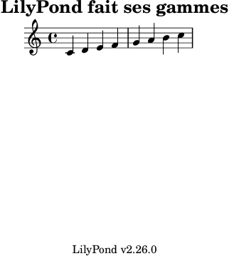

| [Top][Contents][Index] |
LilyPond — Utilisation des programmes
|
Ce document constitue le manuel d’utilisation des programmes de GNU LilyPond 2.26.0. De plus, ce manuel suggère des « bonnes pratiques » pour une utilisation plus efficace. |
1 Exécution de lilypond | Mode d’emploi. | |
2 Mise à jour avec convert-ly | Mise à jour d’anciens fichiers. | |
3 Association musique-texte avec lilypond-book | Intégration de texte et musique. | |
| 4 Programmes externes | Associer LilyPond à d’autres programmes. | |
| 5 Suggestions pour la saisie de fichiers LilyPond | Comment agencer un fichier. | |
Annexes | ||
|---|---|---|
| Appendix A GNU Free Documentation License | Licence de ce document. | |
| Appendix B Index des commandes et concepts | ||
|
Pour connaître la place qu’occupe ce manuel dans la documentation, consultez la page Manuels. Si vous ne disposez pas de certains manuels, la documentation complète se trouve sur https://lilypond.org/. |
| [ << Top ] | [Top][Contents][Index] | [ Mise à jour avec convert-ly >> ] |
| [ < Top ] | [ Up: Top ] | [ Utilisation habituelle > ] |
1 Exécution de lilypond
Ce chapitre passe en revue ce qui se passe lorsque vous lancez LilyPond.
| 1.1 Utilisation habituelle | ||
| 1.2 Utilisation en ligne de commande | ||
| 1.3 Messages d’erreur | ||
| 1.4 Quelques erreurs des plus courantes |
[ << Exécution de lilypond ] | [Top][Contents][Index] | [ Mise à jour avec convert-ly >> ] |
[ < Exécution de lilypond ] | [ Up: Exécution de lilypond ] | [ Utilisation en ligne de commande > ] |
1.1 Utilisation habituelle
La plupart des utilisateurs de LilyPond le font au travers d’une interface graphique (GUI pour graphical user interface). Si vous ne l’avez pas encore parcouru, lisez le Tutoriel. Si vous utilisez un éditeur alternatif pour rédiger vos fichiers LilyPond, référez-vous à la documentation de celui-ci.
[ << Exécution de lilypond ] | [Top][Contents][Index] | [ Mise à jour avec convert-ly >> ] |
| [ < Utilisation habituelle ] | [ Up: Exécution de lilypond ] | [ La variable d’environnement PATH > ] |
1.2 Utilisation en ligne de commande
Nous nous intéresserons ici aux spécificités de LilyPond employé en
ligne de commande. La ligne de commande permet de faire appel à
certaines options particulières. D’autre part, certains utilitaires
associés, tel que midi2ly, ne sont disponibles qu’en ligne de
commande.
Par « ligne de commande », nous entendons l’interface de commande du système. Les utilisateurs de Windows seront certainement plus familiers des termes « fenêtre DOS » ou « invite de commande ». Quant aux utilisateurs de MacOS X, ils connaissent assurément les termes « console » et « terminal ».
Notre propos n’est pas ici d’expliquer ce qu’est l’interface de commande pour un système informatique ni comment elle fonctionne. Aussi, si vous ne savez de quoi il retourne, nous vous renvoyons aux nombreuses documentations que vous pourrez trouver sur ce sujet.
Il est préférable que la ligne de commande utilise Unicode dans un encodage UTF-8. C’est actuellement le standard pour les système de type Unix y xompris macOS et GNU/Linux. En ce qui concerne Windows, on peut choisir UTF-8 en sélectionant un code-page approprié : tapez
chcp 65001
sur la ligne de commande avant de lancer lilypond.exe. Des
solutions pour activer de façon permanente UTF-8 sur la ligne de
commande de Windows sont disponibles sur
internet.1
La variable d’environnement PATH | ||
| Lancement de LilyPond | ||
Options basiques de lilypond | ||
Options avancées de lilypond | ||
| Variables d’environnement | ||
| Réadressage |
[ << Exécution de lilypond ] | [Top][Contents][Index] | [ Mise à jour avec convert-ly >> ] |
| [ < Utilisation en ligne de commande ] | [ Up: Utilisation en ligne de commande ] | [ Lancement de LilyPond > ] |
La variable d’environnement PATH
[Vous pouvez passer cette section si vous utilisez un gestionnaire de
paquetage tel que MacPorts pour installer LilyPond ; PATH devrait
être réglé correctement.]
Dans les différents manuels de LilyPond, les exemples font référence à
lilypond comme étant le programme à lancer. Ceci ne fonctionne
toutefois que dès lors que la variable d’environnement PATH est
réglée de telle sorte qu’elle inclut le répertoire contenant les
binaires de LilyPond.
Partant du principe que vous avez déplié le paquetage de la version
2.26.0 de LilyPond dans le répertoire /home/moi, le
répertoire des binaires à ajouter à PATH est
/home/moi/lilypond-2.26.0/bin
Sur Windows, il devrait normalement s’agir de
C:\Utilisateurs\moi\lilypond-2.26.0\bin
Consultez la documentation pour votre système opératoire ou faites une
recherche sur internet pour savoir comment modifier PATH. Dans le
cas où vous mettez à jour une ancienne version de LilyPond, assurez-vous
que l’ancien répertoire de binaires est supprimé de PATH. Vous
pourrez alors vérifier qu’un appel en ligne de commande à lilypond
--version renvoie la bonne version.
Si, pour quelque raison que ce soit, vous ne parvenez pas à régler
PATH, ou si vous avez plusieurs versions de LilyPond installées,
il vous faudra utiliser le chemin complet d’accès au binaire, par
exemple
/home/moi/lilypond-2.26.0/bin/lilypond musique.ly
[ << Exécution de lilypond ] | [Top][Contents][Index] | [ Mise à jour avec convert-ly >> ] |
[ < La variable d’environnement PATH ] | [ Up: Utilisation en ligne de commande ] | [ Options basiques de lilypond > ] |
Lancement de LilyPond
L’exécutable lilypond en ligne de commande se lance ainsi :
lilypond [option]… fichier…
Lorsque le fichier est fourni sans extension, LilyPond présume qu’il
s’agit de .ly. Pour interpréter directement l’entrée standard
(stdin), fournissez un tiret (-) en lieu et place de
fichier.
Note : En ce qui concerne les versions de Windows antérieures à Windows 10 1903, LilyPond est incapable de gérer les noms de fichier Unicode.
Le traitement de monfichier.ly produira monfichier.pdf par défaut. Vous pouvez spécifier plusieurs fichiers à la fois ; ils seront traités indépendamment les uns des autres.2
Lorsque monfichier.ly contient plus d’une section \book,
les fichiers produits – à partir du deuxième – seront numérotés. Voir
Nom des fichiers de sortie à propos
de la dénomination des fichiers résultants.
Utilisation de LilyPond avec les fonctionnalités standard de l’interpréteur
Dans la mesure où LilyPond est une application qui fonctionne en ligne de commande, les fonctionnalités de l’interpréteur utilisé pour lancer LilyPond peuvent se révéler utiles.
Par exemple,
lilypond *.ly
traite tous les fichiers LilyPond présents dans le répertoire en cours.
Rediriger, par exemple dans un fichier, ce qui est émis à l’écran peut s’avérer utile.
lilypond fichier.ly 1> stdout.log lilypond fichier.ly 2> stderr.log lilypond fichier.ly &> tous.log
Les commandes ci-dessus redirigeront respectivement le « verbiage normal », les erreurs ou tout, dans un fichier texte.
Consultez avant tout la documentation de votre interpréteur habituel – terminal, console, etc. – pour vérifier qu’il prend en charge les options dans cette syntaxe.
Voici comment traiter un jeu de fichiers répartis dans un répertoire donné ainsi que tous ses différents sous-répertoires. Les fichiers résultants sont regroupés dans le répertoire à partir duquel la commande a été exécutée, non selon l’emplacement des fichiers sources.
find . -name '*.ly' -exec lilypond '{}' \;
Cette commande, bien qu’effective uniquement dans un terminal, devrait être fonctionnelle aussi pour les utilisateurs de MacOS X.
Les utilisateurs de windows utiliseront l’instruction
forfiles /s /M *.ly /c "cmd /c lilypond @file"
dans l’interpréteur de commandes, qui se trouve normalement sous
Démarrer > Accessoires > Interpréteur de commandes ou, pour la
version 8, en faisant une recherche sur « interpréteur de commande ».
Par ailleurs, il est possible de spécifier de manière explicite le
chemin d’accès au dossier comportant des sous-répertoires où se trouvent
les fichiers sources, à l’aide de l’option /p :
forfiles /s /p C:\Documents\MesPartitions /M *.ly /c "cmd /c lilypond @file"
Dans le cas où ce chemin d’accès comporte des espaces, l’intégralité de ce chemin devra être borné par des guillemets informatiques :
forfiles /s /p "C:\Documents\Mes Partitions" /M *.ly /c "cmd /c lilypond @file"
[ << Exécution de lilypond ] | [Top][Contents][Index] | [ Mise à jour avec convert-ly >> ] |
| [ < Lancement de LilyPond ] | [ Up: Utilisation en ligne de commande ] | [ Options avancées de lilypond > ] |
Options basiques de lilypond
Gardez bien à l’esprit que lorsque l’argument à une option contient des
espaces, il doit être encadré par des guillemets. Par exemple, pour
écrire la sortie de LilyPond dans un répertoire ‘foo bar’, il
faudra ajouter -o "foo bar" (ou --output="foo bar") aux
arguments de lilypond en ligne de commande. Ces guillemets
informatiques encadrant des arguments sont reconnus par pratiquement
tous les interpréteurs en ligne de commande, que ce soit sur Windows ou
les différents type d’Unix (y compris macOS).
Différentes options sont disponibles en ligne de commande :
-d,--define-default=var[=val]-e,--evaluate=exprÉvalue l’expression Scheme expr avant d’analyser tout fichier .ly. Lorsque vous spécifiez l’option -e à plusieurs reprises, l’évaluation est faite en séquence.
Dans la mesure où l’expression est évaluée par le module
guile-user, vous devez, dès lors que expr utilise des définitions telles que(define-public a 42), spécifierlilypond -e "(define-public a 42)"
en ligne de commande, et ajouter la ligne
#(use-modules (guile-user))
en tête de votre fichier .ly.
-E,--epsGénère des fichiers EPS.
Cette option est équivalente à
-dseparate-page-formats=eps -dtall-page-formats=eps.-f,--format=formatDétermine le format à produire. Il peut s’agir de
ps,pdf,pngousvg.Exemple :
lilypond -fpng monfichier.lySVG utilisant en interne un moteur spécifique, il ne peut donc s’obtenir de la même manière que les autres formats ; l’utilisation de
-fsvgou--svgrevient en fait à utiliser l’option-dbackend=svg– voir Options avancées delilypond.-h,--helpAffiche un résumé des commandes.
-H,--header=CHAMPRecopie le champ d’entête dans le fichier RACINE.CHAMP.
Par exemple, si un fichier toto.ly contient
\header { title = "tutu" } \score { c1 }La commande
lilypond -H title toto.ly
produit un fichier texte plat toto.title contenant la chaîne
tutu.-i,--init=fichierDéfinit fichier (par défaut init.ly) en tant que fichier d’initialisation.
-I,--include=répertoireAjoute répertoire, de façon relative, au chemin de recherche pour les inclusions. Par défaut, seul le répertoire courant est consulté.
Vous pouvez mentionner plusieurs fois l’option -I, auquel cas la recherche commencera dans le premier répertoire inclus et, si le fichier en question ne s’y trouve pas, les répertoires suivants seront examinés l’un après l’autre.
Note : L’utilisation du tilde (
~) avec l’option -I peut produire des résultats inattendus selon le shell.Les utilisateurs de Windows doivent ajouter une oblique (
/) finale au chemin d’accès.-j,--jail=user,group,jail,dir[Cette option n’est disponible que dès lors que l’environnement dispose de la fonctionnalité
chroot. Windows, plus particulièrement, ne le prend pas en charge.] Lancelilyponddans un environnement protégé.L’option --jail peut s’utiliser pour des raisons de sécurité lorsque LilyPond est installé sur un serveur web ou traite des fichiers externes – voir Options avancées de
lilypond. Dans la mesure où LilyPond procure de quoi faire tourner des programmes Guile, il est primordial, en pareil cas, que ce soit dans un environnement contraint de telle sorte que les fichiers alors compilés ne mettent pas en péril l’intégrité du système comme, par exemple, avec un% trop dangereux à écrire sans faute #(s yste m "rm -rf /") % malveillant mais pas destructeur { c4^$(ly:gulp-file "/etc/passwd") }L’option --jail permet d’obtenir une telle incarcération. Un autre moyen consiste à utiliser LilyPond dans un conteneur Docker.
L’option --jail va détourner la racine de
lilypondsur jail juste avant d’effectuer la compilation à proprement parler. L’utilisateur et le groupe sont modifiés en conséquence, et le répertoire en cours devient dir. Ces réglages assurent – du moins en théorie – l’impossibilité de s’échapper de la cellule. Notez cependant que, pour que l’option --jail soit fonctionnelle,lilyponddoit être lancé en tant qu’administrateur – ce qui se réalise aisément à l’aide de la commandesudo.La création d’un environnement sécurisé requiert quelques précautions dans la mesure où LilyPond doit disposer de tout ce dont il a besoin pour compiler le fichier source à l’intérieur de la cellule. L’ermitage, avant d’être viable, requiert donc les étapes suivantes :
- Création d’un système de fichiers indépendant
L’intérêt d’un système de fichiers dédié à LilyPond réside dans le fait qu’on peut le brider à l’aide des options
noexec,nodevetnosuid. Il sera de fait impossible de lancer des exécutables ou d’écrire sur un périphérique à partir de LilyPond. Si vous n’avez pas l’intention de créer un tel système sur une partition séparée, vous pouvez avoir recours à un pseudo-périphérique (loop device) monté à partir d’un simple fichier de taille raisonnable. D’autre part, le recours à un système de fichiers indépendant permet de limiter l’espace dévolu à LilyPond.- Création d’un utilisateur spécifique
L’utilisation de LilyPond au sein de la cellule devrait être réservé à un utilisateur aux droits restreints. Il faudra donc créer un utilisateur et un groupe spécifiques – disons
lily/lily– qui n’aura accès en écriture qu’à un unique répertoire déterminé par la valeur de dir.- Agencement des lieux
LilyPond a besoin d’un certain nombre de fichiers pour pouvoir tourner correctement. Ces fichiers devront donc tous se retrouver dans l’environnement protégé, distribués selon la même arborescence que dans le système d’origine. Ainsi l’intégralité de l’installation de LilyPond (en principe /usr/share/lilypond) doit y être dupliquée.
En cas de problème, lancer LilyPond en utilisant
stracevous permettra de déterminer quels fichiers manquent à l’appel.- Lancement de LilyPond
Dans un environnement protégé monté avec l’option
noexec, il est impossible de lancer un quelconque programme extérieur. LilyPond ne saurait donc avoir recours à un moteur de traitement qui le mettrait dans cette situation. Comme nous l’avons vu plus haut, LilyPond sera lancé avec les privilèges de l’administrateur – privilèges qu’il perd aussitôt –, ce qui peut nécessiter le recours à la commandesudo. Il est par ailleurs judicieux de limiter le temps processeur alloué à LilyPond – grâce àulimit -tpar exemple – ainsi que, si votre système le permet, la taille de la mémoire.
-l,--loglevel=degréRègle le niveau de verbosité des messages console à degré. Les différentes valeurs sont :
NONEAucun verbiage, même pas les messages d’erreur.
ERRORUniquement les messages d’erreur ; pas de message d’avertissement ni de progression.
WARNMessages d’avertissement ou d’erreur ; pas d’information de progression.
BASICInformation de progression basique (réussite) et avertissements ou erreurs.
PROGRESSToutes les informations de progression, avertissements et erreurs.
INFOInformations de progression, avertissements et erreurs, ainsi que d’autres informations relatives à l’exécution. Ceci est la valeur par défaut.
DEBUGTout ce qui peut être affiché, y compris le verbiage utile au débogage.
-o,--output=FICHIER-o,--output=RÉPERTOIREDétermine le nom par défaut du fichier résultant à FICHIER ; lorsque l’argument RÉPERTOIRE correspond à un répertoire déjà existant, c’est là que les fichiers résultants seront déposés. Le suffixe adéquat sera ajouté (par ex. .pdf pour du PDF) dans tous les cas.
-O,--pspdfopt=cléDétermine l’optimisation des PS/PDF résultants à clé. Les valeurs possibles sont :
sizeGénère un document PS, EPS ou PDF le plus léger possible. Il s’agit de la valeur par défaut.
L’utilisation de cette valeur revient à lancer les commandes Scheme de LilyPond
-dmusic-font-encodings="#f"et-dgs-never-embed-fonts="#f".TeXProduit des fichiers optimisés pour leur inclusion dans des documents pdfTeX, LuaTeX ou XeTeX.
L’utilisation de cette valeur revient à lancer les commandes Scheme de LilyPond
-dmusic-font-encodings="#t"et-dgs-never-embed-fonts="#f".TeX-GSL’inclusion de plusieurs PDF générés par LilyPond dans un document TeX nécessite l’utilisation de cette option et un retraitement du PDF généré par TeX à l’aide de Ghostscript.
L’utilisation de cette valeur revient à lancer les commandes Scheme de LilyPond
-dmusic-font-encodings="#t"et-dgs-never-embed-fonts="#t".
--psGénère du PostScript. Cette option est équivalente à
-fps.--pngGénère une image par page, au format PNG. Cette option est équivalente à
-fpng.La résolution de l’image peut se régler à N DPI en ajoutant
-dresolution=N
--pdfGénère du PDF. Ceci est la valeur par défaut, et est équivalant à
-fpdf.-s,--silentN’affiche rien de plus que les messages d’erreur. Ceci est équivalent à
-lERROR.--svgGénère un fichier SVG par page. Cette option est équivalente à
-fsvg.-v,--versionAffiche le numéro de version.
-V,--verboseActive le mode verbeux : affichage de l’intégralité du chemin d’accès de chaque fichier, et information des temps de traitement. Ceci est équivalent à
-lDEBUG.-w,--warrantyAffiche les informations de garantie applicables à GNU LilyPond – il est livré SANS GARANTIE !
[ << Exécution de lilypond ] | [Top][Contents][Index] | [ Mise à jour avec convert-ly >> ] |
[ < Options basiques de lilypond ] | [ Up: Utilisation en ligne de commande ] | [ Variables d’environnement > ] |
Options avancées de lilypond
L’option -d est l’interface de la ligne de commande à la
fonction Scheme de LilyPond ly:set-option. Par voie de
conséquence, toutes les options listées ci-après peuvent aussi se
définir au sein même des fichiers .ly.
-d,--define-default=nom-option[=valeur]-d,--define-default=no-nom-optionAffecte la valeur Scheme valeur à l’option interne nom-option du programme. Par exemple, l’option en ligne de commande
-dbackend=svg
équivaut à
#(ly:set-option 'backend 'svg)
dans un fichier source LilyPond.
En l’absence de valeur, le programme utilisera #t. Préfixer nom-option d’un
no-permet de désactiver une option, autrement dit affecte#fà valeur. Ainsi,-dno-point-and-click
revient au même que
-dpoint-and-click="#f"
[Note : le caractère ‘#’ introduit un commentaire dans de nombreux
shells ; c’est pourquoi nous recommandons de toujours borner par
des ' les expressions qui le contiennent.]
Voici les différentes options disponibles, ainsi que leur valeur par
défaut. Au sein de code Scheme, la valeur des options est interprétée
par la fonction ly:get-option.
anti-alias-factornumAdopte une résolution supérieure, selon le facteur num donné (entier positif inférieur ou égal à 8), puis réduit au niveau du résultat afin d’éviter les « distorsions » des images
PNG. La valeur par défaut est de1.aux-filesboolSi bool est fixé à
#t, génère les fichiers.tex,.texiet.countpour le moteur de rendueps. Cette option est principalement destinée àlilypond-book. La valeur par défaut est#t.backendsymboleDétermine symbole comme moteur de traitement de LilyPond. Les valeurs possibles sont :
psIl s’agit du réglage par défaut. Les fichiers PostScript incluent les fontes
TTF,Type1etOTF, et ce en intégralité. Si vous utilisez des jeux de caractères orientaux, le fichier aura vite fait d’atteindre une taille conséquente.Pour l’obtention d’un fichier PDF, c’est aussi le moteur
psqui est utilisé. Les données PS sont ensuite retraitées parps2pdf, script de Ghostscript, qui par défaut extrait des sous-ensembles des fontes.cairoCrée des sorties graphiques à l’aide de la bibliothèque Cairo. Ce moteur peut générer du PS, du EPS, du PDF, du PNG et du SVG.
svgGénère du Scalable Vector Graphics. Cette option permet de créer un fichier SVG par page. Les glyphes musicaux sont codés en tant que graphiques vectoriels mais les fontes textuelles ne sont pas incorporées aux fichiers SVG résultants. Quel que soit le programme utilisé pour visionner ces fichiers, il devra avoir accès aux fontes en question pour pouvoir afficher correctement les textes et paroles. Il est préférable de ne pas recourir aux « alias de police » ni aux listes de fontes si la visionneuse de fichier SVG ne peut le traiter correctement.
clip-systemsboolSi bool est déterminé à
#t, extrait des fragments musicaux d’une partition. Ceci requiert que la fonctionclip-regionsa été définie au sein du bloc\layout– voir Extraction de fragments musicaux. Bien entendu, aucun fragment ne sera extrait si l’on utilise l’option -dno-print-pages. La valeur par défaut est#f.compile-scheme-codeboolUtilise le compilateur de Guile pour traiter du code Scheme, au lieu de l’évaluateur. Pour de plus amples informations, voir Débogage de code Scheme.
cropboolSi bool est déterminé à
#t, un second fichier PDF sera créé (avec l’extension .cropped.pdf) ainsi que son rendu sous forme d’image (avec l’extension .cropped.png). Ce fichier résultant (musique et entêtes) sera à la taille de l’image générée, sans marge. Dans le cas où est utilisée l’option --svg sera alors produit un fichier SVG (avec l’extension .cropped.svg). Dès lors que sont utilisées les options --eps ou --ps, un fichier réduit PS (avec l’extension .cropped.eps) sera généré en lieu et place d’un PDF réduit. La valeur par défaut est#f.Pour les fonctionnalités de LilyPond, les dimensions de l’image réduite sont toujours arrondies à un nombre entier de big points (PostScript), ce qui peut résulter en un peu d’espace blanc sur la marge droite. Il est possible de l’éviter en réglant la variable de papier à une valeur entière de big points comme
450\bp.Notez bien que cette option n’est, à ce jour, pas très adaptée dans le cadre d’une sortie comportant plusieurs systèmes puisque l’espace les séparant est supprimé.
datadirchaîneDétermine le préfixe des fichiers de données (lecture seule).
debug-evalboolSi bool est déterminé à
#t, LilyPond utilisera l’évaluateur de déboguage Scheme qui affichera les traçage et les numéros de ligne en cas d’erreur. La valeur par défaut est#f, mais#tlorsque--verboseest utilisé.debug-skylinesboolSi bool est déterminé à
#t, permet le débogage des lignes d’horizon. La valeur par défaut est#f.delete-intermediate-filesboolSi bool est déterminé à
#t, supprime les fichiers .ps inutiles créés lors de la compilation. La valeur par défaut est#t.embed-source-codeboolSi bool est déterminé à
#t, intègre les fichiers source LilyPond au document PDF généré. La valeur par défaut est#f.eps-box-paddingnumDécale le bord gauche du typon EPS d’une valeur num donnée en millimètres. La valeur par défaut est
#f, autrement dit sans décalage.firstchaîneGénère la partition sur une durée donnée par chaîne à compter du début. Ceci est équivalent à une clause
showFirstLength = chaîne
mentionnée au début du fichier source. Dès lors que -dfirst et
showFirstLengthsont tous deux présents, l’option de la ligne de commande aura priorité. Voir Extraction de fragments musicaux. La valeur par défaut est#f.font-export-dirchaîneDétermine à chaîne le répertoire dans lequel exporter les fontes en tant que fichiers PostScript. Ceci est tout à fait approprié lorsque l’on crée un fichier PDF sans y incorporer les fontes dans un premier temps, et laisse Ghostscript le faire par la suite comme indiqué ci-dessous.
$ lilypond -dfont-export-dir=fontdir\ -dgs-never-embed-fonts foo.ly $ gs -q -dBATCH -dNOPAUSE -sDEVICE=pdfwrite \ -sOutputFile=foo.embedded.pdf foo.pdf fontdir/*.font.psNote : Contrairement à
font-ps-resdir, cette méthode ne permet pas d’incorporer de fonte CID avec une version de Ghostscript égale ou supérieure à 9.26.Note : De la même manière que
font-ps-resdir, cette option ignore les fontes TrueType dans la mesure où les incorporer a posteriori peut causer une altération des caractères. L’utilisation degs-never-embed-fonts, dans la mesure où elle incorpore les fontes TrueType en dépit de ce qu’elle prétend d’après son nom, permet d’éviter les caractères altérés.La valeur par défaut est
#f, autrement dit absence de répertoire pour l’export.font-ps-resdirchaîneDétermine à chaîne le répertoire dans lequel sera construit le sous-ensemble des ressources PostScript utilisé pour l’incorporation ultérieure des fontes. Ceci est tout à fait approprié lorsque l’on crée un fichier PDF sans y incorporer les fontes dans un premier temps, et laisse Ghostscript le faire par la suite comme indiqué ci-dessous.
$ lilypond -dfont-ps-resdir=resdir -dgs-never-embed-fonts foo.ly $ gs -q -dBATCH -dNOPAUSE -sDEVICE=pdfwrite \ -I resdir -I resdir/Font \ -sOutputFile=foo.embedded.pdf foo.pdfNote : Il vaut mieux éviter que le nom du répertoire contienne le mot Resource, qui a une signification particulière lorsqu’utilisé avec une option
-Ide Ghostscript.Note : Contrairement à
font-export-dir, cette méthode permet l’incorporation de fontes CID avec une version de Ghostscript égale ou supérieure à 9.26.Note : De la même manière que
font-export-dir, cette option ignore les fontes TrueType dans la mesure où les incorporer a posteriori peut causer une altération des caractères. L’utilisation degs-never-embed-fonts, dans la mesure où elle incorpore les fontes TrueType en dépit de ce qu’elle prétend d’après son nom, permet d’éviter les caractères altérés.La valeur par défaut est
#f, autrement dit absence de construction d’un répertoire de sous-ensemble.gs-load-fontsboolSi bool est déterminé à
#t, charge les fontes grâce à Ghostscript. Cette option a pour conséquence que les fichiers générés par LilyPond ne contiendront que les références des fontes, qui seront ensuite résolues en fontes réelles lors de l’étape de retraitement par Ghostscript. La valeur par défaut est#f.gs-load-lily-fontsboolSi bool est déterminé à
#t, limite les fontes chargées par Ghostscript aux seules fontes LilyPond. Cette option a pour conséquence que les fichiers générés par LilyPond ne contiendront les références que des fontes musicales de LilyPond, qui seront ensuite résolues en fontes réelles lors de l’étape de retraitement par Ghostscript. Les autres fontes sont générées normalement. La valeur par défaut est#f.gs-never-embed-fontsboolSi bool est déterminé à
#t, intime à Ghostscript d’embarquer les fontes uniquement au format TrueType, sans exception. La valeur par défaut est#f.helpboolSi bool est déterminé à
#t, affiche un écran d’aide. La valeur par défaut est#f.include-book-title-previewboolSi bool est déterminé à
#t, inclut les titres de l’ouvrage dans les images de prévisualisation. La valeur par défaut est#t.include-eps-fontsboolSi bool est déterminé à
#t, inclut les fontes dans chaque fichier EPS contenant un système. La valeur par défaut est#t.include-settingschaîneInclut le fichier chaîne contenant les réglages globaux, qui sera inclus avant traitement de la partition. Cette option peut se multiplier afin d’incorporer plusieurs réglages. La valeur par défaut n’est pas déterminée, autrement dit absence de fichier de réglages.
job-countnumTraite plusieurs fichiers en parallèle, selon le nombre num (un entier positif) de jobs. La valeur par défaut est
#f, autrement dit sans traitement parallèle.lastchaîneGénère la partition sur une durée donnée par chaîne à compter de la fin. Ceci est équivalent à une clause
showLastLength = chaîne
mentionnée au début du fichier source. Dès lors que -dlast et
showLastLengthsont tous deux présents, l’option de la ligne de commande aura priorité. Voir Extraction de fragments musicaux. La valeur par défaut est#f.log-filechaîneRedirige la sortie dans le fichier journal chaîne.log. La valeur par défaut est
#f, autrement dit absence de fichier de journalisation.max-markup-depthnumDétermine à num (un entier positif) la profondeur maximale de l’arborescence de markups. Si un markup était plus profond, part du principe qu’on n’aboutira pas, émet un avertissement et renvoie alors un markup vide. La valeur par défaut est
1024.midi-extensionchaîneDétermine à chaîne l’extension par défaut des fichiers MIDI.La valeur par défaut est
"midi".music-strings-to-pathsboolSi bool est déterminé à
#t, convertit les chaînes textuelles en chemins lorsque les glyphes font partie d’une fonte musicale. La valeur par défaut est#f.paper-sizechaîneDétermine la taille par défaut du papier à chaîne. La valeur par défaut est
"a4".pixmap-formatchaîneDétermine le format de sortie en images pixélisées pour Ghostscript à chaîne. La valeur par défaut est
"png16m".png-widthlargeurpng-heighthauteurDans le cas d’une sortie PNG, détermine la largeur et la hauteur, en pixels, des images créées. En l’absence de l’une de ces options, l’autre dimension sera calculée relativement à la boîte EPS englobante tout en maintenant le ratio d’aspect. Les valeurs largeur et hauteur sont toutes deux des entiers positifs.
En complément de l’option --png, les options --eps, -dcrop ou -dpreview devraient permettre une mise à l’échelle correcte sans détourage.
L’option -dresolution est ignorée.
Notez la présence d’un bogue dans les versions de Ghostscript inférieures à 9.52 avec ces deux options : l’image PNG produite sera vide dès lors que la hauteur est supérieure à la largeur.
La valeur par défaut est
0autant pour largeur que pour hauteur, ce qui signifie que ces deux dimensions seront déterminées par la boîte EPS englobante.point-and-clickvaleurSi valeur est déterminé à
#t, ajoute les liens « point & click » à la sortie PDF ou SVG – voir Pointer-cliquer. La valeur par défaut est#t.previewboolSi bool est déterminé à
#t, génère une prévisualisation en plus de la sortie normale. La valeur par défaut est#f.Cette option, disponible dans tous les formats de sortie imprimables – rendus
pdf,png,ps,epsetsvg– génère un fichier de la forme fichierSource.preview.rendu comprenant le titrage et le premier système. S’il existe plusieurs sections\bookou\bookpart, ce fichier contiendra les titrage et premier système de chacun des\book,\bookpartet\score, dès lors que la variableprint-all-headersdu bloc\paperest activée.Pour l’éviter, utilisez conjointement l’une des options -dprint-pages ou -dno-print-pages selon vos besoins.
print-pagesboolSi bool est déterminé à
#t, génère l’intégralité des pages de la partition. La valeur par défaut est#t.L’option -dno-print-pages est particulièrement utile lorsqu’utilisée conjointement avec les options -dpreview et -dcrop.
protected-scheme-parsingboolSi bool est déterminé à
#t, continue en dépit des erreurs que l’analyseur syntaxique détecterait dans du code Scheme inclus. Lorsque basculé sur#f, stoppe le traitement s’il y a erreur et affiche une trace de la pile. La valeur par défaut est#t.read-file-listboolSi bool est déterminé à
#t, considère tous les fichiers en argument sur la ligne de commande comme étant des listes de fichiers sources LilyPond à traiter, ces listes mentionnant un fichier par ligne. La valeur par défaut est#f.relative-includesboolFace à une instruction
\include, recherche les fichiers à inclure relativement à l’endroit où se trouve le fichier en cours de traitement si bool est déterminé à#t, plutôt que par rapport au fichier maître. La valeur par défaut est#t.resolutionnumDétermine la résolution des pixmaps
PNGà générer à num (un entier positif)dpi. La valeur par défaut est101.separate-log-filesboolPour les fichiers fichier1.ly, fichier2.ly, etc. enregistre le déroulement dans les journaux fichier1.log, fichier2.log… si bool est déterminé à
#t. La valeur par défaut est#f.separate-page-formatschaîneListe des formats (
svg,pdf,png, oueps), séparés par des virgules, à utiliser pour les images séparées des pages pourlilypond-book– voir Autres programmes. La valeur par défaut est#f.show-available-fontsboolSi bool est déterminé à
#t, liste le nom des fontes disponibles tel que le ressort la bibliothèque fontconfig. LilyPond ajoute à cette liste les réglages et la configuration de fontconfig. La valeur par défaut est#t.staff-sizenumDétermine la taille globale de portée à num (un nombre positif) points. Ceci est équivalent à une clause
#(set-global-staff-size num)
mentionnée au début du fichier source. La valeur par défaut est 20pt.
strip-output-dirboolSi bool est déterminé à
#t, supprime, lors du nommage des fichiers résultants, la partie correspondant au répertoire des fichiers sources. La valeur par défaut est#t.strokeadjustboolSi bool est déterminé à
#t, force l’ajustement des traits PostScript. Cette option trouve toute son utilité pour générer du PDF à partir de PostScript – l’ajustement des traits est en principe automatiquement activé pour les périphériques bitmap à faible résolution. Sans cette option, les visionneurs de PDF ont tendance à ne pas rendre de manière constante l’épaisseur des hampes dans les résolutions habituelles des écrans. Bien que n’affectant pas notoirement la qualité d’impression, cette option accroît notablement la taille des fichiers PDF. La valeur par défaut est#f.tall-page-formatschaîneListe des formats (
svg,pdf,png, oueps), séparés par des virgules, à utiliser pour l’image pleine page pourlilypond-book– voir Autres programmes. La valeur par défaut est#f.use-paper-size-for-pageboolSi bool est déterminé à
#t, chaque page est dimensionnée au format du papier, tout en éliminant les parties qui pourraient déborder. Lorsque cette option est déterminée à#f, la feuille sera redimensionnée pour contenir autant que nécessaire. La valeur par défaut est#t.verboseboolPasse en mode verbeux, ce qui correspond à un niveau de journalisation
DEBUG(lecture seule).warning-as-errorboolSi bool est déterminé à
#t, considère tous les messages d’avertissement et « erreur de programmation » comme étant de véritables erreurs. La valeur par défaut est#f.
[ << Exécution de lilypond ] | [Top][Contents][Index] | [ Mise à jour avec convert-ly >> ] |
[ < Options avancées de lilypond ] | [ Up: Utilisation en ligne de commande ] | [ Réadressage > ] |
Variables d’environnement
lilypond reconnaît les variables d’environnement
suivantes :
LILYPOND_DATADIRCette variable spécifie le répertoire où sont recherchés par défaut les différentes versions des messages ainsi qu’un certain nombre de fichiers nécessaires au traitement, dérogeant ainsi aux endroits définis soit lors de la compilation, soit calculés dynamiquement lors de l’exécution – voir Réadressage. Il devrait contenir les sous-répertoires ly/, ps/, tex/, etc.
LILYPOND_LOCALEDIRCette variable spécifie le répertoire où sont situés les fichiers linguistiques, dérogeant ainsi aux valeurs dérivées de
LILYPOND_DATADIR.LILYPOND_RELOCDIRCette variable spécifie le répertoire dans lequel résident les fichiers de réadressage. Ceci constitue une dérogation aux endroits définis à partir d’où réside le binaire
lilypond.LANGCette variable détermine la langue dans laquelle sont émises les données sur
stdout(sortie standard) etstderr(sortie des erreurs), pour afficher la progression, les avertissements ou messages de débogage. Par exemple :LANG=de.LILYPOND_LOGLEVELCette variable détermine le niveau par défaut de verbosité. En l’absence de niveau explicite – autrement dit la ligne de commande ne comporte pas de --loglevel – c’est cette valeur qui sera utilisée.
LILYPOND_GC_YIELDCette variable permet d’ajuster l’empreinte mémoire et le rendement de la machine. Il s’agit en fait d’un pourcentage d’allocation de mémoire : lorsqu’il est élevé, le programme favorisera l’utilisation de la mémoire ; une faible valeur consommera plus de temps processeur. Par défaut, cette valeur est fixée à
70.TMPDIRCette variable permet de déterminer, sur GNU/Linux et Mac, le répertoire temporaire. La valeur par défaut est /tmp. Il s’agit du répertoire dans lequel seront enregistrés, durant la compilation, les fichiers intermédiaires tels que les fichiers PostScript. Apporter une dérogation à cette variable peut s’avérer utile lorsque, par exemple, l’utilisateur qui lance
lilypondn’a pas les droits en écriture sur le répertoire temporaire par défaut. Exemple :TMPDIR=~/toto.
[ << Exécution de lilypond ] | [Top][Contents][Index] | [ Mise à jour avec convert-ly >> ] |
| [ < Variables d’environnement ] | [ Up: Utilisation en ligne de commande ] | [ Fichiers de réadressage > ] |
Réadressage
La plupart des programmes dans le monde Unix utilise des répertoires par défaut pour leurs données, déterminés au moment de leur configuration avant même leur compilation. LilyPond n’y fait pas exception ; par exemple, une installation typique met le fichier binaire lilypond dans le répertoire /usr/bin et tous les fichiers propres à LilyPond dans des sous-répertoires de /usr/share/lilypond/2.26.0/ si tant est que la version en cours soit 2.26.0.
Alors que cette approche est tout à fait fonctionnelle dans le cadre d’une compilation manuelle et des plateformes disposant de gestionnaires de paquetages standardisés, elle peut entraîner des problèmes lorsque de tels gestionnaires ne sont pas courants ou pas utilisés par défaut – on peut citer à titre d’exemple Windows et macOS pour lesquels les utilisateurs s’attendent à ce que l’installation des programmes se fasse n’importe où.
La solution habituelle en pareil cas est la prise en charge du réadressage : au lieu d’utiliser des chemins codés en dur pour les fichiers de données, la localisation des fichiers de support nécessaires est calculée lors de l’exécution relativement au binaire lancé.
| Fichiers de réadressage | ||
| Algorithme de réadressage |
[ << Exécution de lilypond ] | [Top][Contents][Index] | [ Mise à jour avec convert-ly >> ] |
| [ < Réadressage ] | [ Up: Réadressage ] | [ Algorithme de réadressage > ] |
Fichiers de réadressage
Un deuxième mécanisme intervient en fait pour la configuration de
l’exécution : LilyPond dépend fortement de programme ou bibliothèques
externes, en particulier les bibliothèques FontConfig et
Guile pour trouver respectivement les fontes du système et les
traitement des fichiers Scheme, ainsi que le programme gs pour
convertir les données PostScript en fichiers PDF. Tout ceci doit aussi
être configuré pour retrouver ses propres fichiers de données. Pour y
parvenir, le programme lilypond analyse tous les fichiers d’un
répertoire dénommé relocate, s’il existe – voir ci-après les
endroits où ce répertoire est recherché – afin de manipuler les
variables d’environnement ce qui, en retour, contrôlera ces programmes
et bibliothèques externes. Les format de ces fichiers de réadressage est
simple, chaque ligne répondant à la syntaxe
commande clé=valeur
et les lignes vides y seront ignorées
La directive commande est l’une des suivantes :
setDéfinit de manière inconditionnelle la variable d’environnement clé à valeur. Ceci écrase la valeur précédemment définie.
set?Définit la variable d’environnement clé à valeur uniquement si clé n’est pas déjà définie. En d’autres termes, une valeur précédemment définie ne sera pas écrasée.
setdirLorsque valeur est un répertoire, définit inconditionnellement clé à valeur. Un message d’avertissement est émis dans le cas contraire.
setfileLorsque valeur est un fichier, définit inconditionnellement clé à valeur. Un message d’avertissement est émis dans le cas contraire.
prependdirAjoute le répertoire valeur à la liste des répertoires de la variable d’environnement clé. Dans le cas où clé n’existe pas, celle-ci sera créée.
Les variables d’environnement, identifiables au signe dollar qui les préfixe, sont permises en tant que valeur et seront expansées avant l’exécution de la directive.
Voici deux exemples d’entrée d’un fichier de réadresssage.
set? FONTCONFIG_FILE=$INSTALLER_PREFIX/etc/fonts/fonts.conf prependdir GUILE_LOAD_PATH=$INSTALLER_PREFIX/share/guile/1.8
Dans la mesure où l’ordre d’analyse des fichiers du répertoire relocate est arbitraire, mieux vaut s’abstenir de définir une même variable d’environnement à de multiples lignes des fichiers de réadressage.
[ << Exécution de lilypond ] | [Top][Contents][Index] | [ Mise à jour avec convert-ly >> ] |
| [ < Fichiers de réadressage ] | [ Up: Réadressage ] | [ Messages d’erreur > ] |
Algorithme de réadressage
Afin de trouver ses fichiers de données, LilyPond utilise l’algorithme suivant.
- Localisation du répertoire où se trouve le binaire
lilypondactuellement exécuté et nommage enbindir. Détermination, en interne, de la variable d’environnementINSTALLER_PREFIXà bindir/.. – autrement dit le répertoire parent debindir. - Contrôle de la variable d’environnement
LILYPOND_DATADIR. Si elle est définie, utilisation de sa valeur pour le répertoire de données –datadir– de LilyPond. Dans le cas contraire, utilisation soit de $INSTALLER_PREFIX/share/lilypond/version (avec version étant la version courante de LilyPond), soit $INSTALLER_PREFIX/share/lilypond/current. - Contrôle de la variable d’environnement
LILYPOND_LOCALEDIR. Si elle est définie, utilisation de sa valeur pour le répertoire de données linguistiques –localedir– de LilyPond. Dans le cas contraire, ce sera $INSTALLER_PREFIX/share/locale. - Contrôle de la variable d’environnement
LILYPOND_RELOCDIR. Si elle existe, utilisation de sa valeur pour le répertoire des fichiers de réadressage –relocdir– de LilyPond. Dans le cas contraire, ce sera $INSTALLER_PREFIX/etc/relocate. - En l’absence de
datadir, utilisation d’une valeur déterminée au fil de la compilation. Idem pourlocaledir, mais pas pourrelocdir(cela n’a aucun sens de le faire). - Si
relocdirexiste, traiter tous les fichiers dans ce répertoire, comme indiqué dans Fichiers de réadressage.
[ << Exécution de lilypond ] | [Top][Contents][Index] | [ Mise à jour avec convert-ly >> ] |
| [ < Algorithme de réadressage ] | [ Up: Exécution de lilypond ] | [ Quelques erreurs des plus courantes > ] |
1.3 Messages d’erreur
Différents messages d’erreur sont susceptibles d’apparaître au cours de la compilation d’un fichier :
- Warning – Avertissement ¶
-
Ce type de message est émis lorsque LilyPond détecte quelque chose de suspect. Si vous avez demandé quelque chose qui sort de l’ordinaire, vous saurez probablement ce à quoi il est fait référence et ignorerez de tels messages sans remord. Néanmoins, les messages d’avertissement indiquent la plupart du temps une incohérence dans le fichier source.
- Error – Erreur ¶
LilyPond a détecté une erreur. L’étape en cours, qu’il s’agisse de l’analyse, de l’interprétation des données ou bien du formatage, sera menée à son terme, puis LilyPond s’arrêtera.
- Fatal error – Erreur fatale ¶
LilyPond est confronté à une anomalie bloquante. Ceci ne se produit que très rarement, et la plupart du temps en raison d’une installation défectueuse des fontes.
- Scheme error – Erreur Scheme ¶
-
Les erreurs qui interviennent lors de l’exécution de code Scheme sont gérées par l’interpréteur Scheme. L’utilisation du mode verbeux (options -V ou --verbose) vous permettra de localiser l’appel de fonction délictueux.
- Programming error – Erreur de programmation ¶
-
LilyPond est confronté à une incohérence interne. Ce type de message est destiné à venir en aide aux développeurs et débogueurs. En règle générale, vous pouvez tout simplement les ignorer. Parfois, il y en a tant qu’ils masquent ce qui pourrait vous intéresser…
- Aborted (core dumped) – Abandon ¶
Ce type de message indique que LilyPond a planté en raison d’une grave erreur de programmation. La survenance d’un tel message est considérée comme de la plus haute importance. Si vous y étiez confronté, transmettez un rapport de bogue.
Lorsque l’avertissement ou l’erreur est directement lié au fichier source, le message est libellé sous la forme
fichier:ligne:colonne: message contenu de la ligne litigieuse
Un saut de ligne est placé dans la ligne de code, indiquant l’endroit précis du problème, comme ici :
test.ly:2:19: erreur: n'est pas une durée: 5
{ c'4 e'
5 g' }
Notez que ces coordonnées constituent l’approximation au mieux par LilyPond dans le code ayant déclenché l’avertissement ou l’erreur. En règle générale, erreurs et avertissements surviennent lorsque LilyPond rencontre quelque chose d’inattendu. Lorsque la ligne indiquée ne vous semble pas comporter d’élément litigieux, remontez de quelques lignes dans votre code.
Par ailleurs, des diagnostics peuvent être déclenchés à n’importe quel moment au cours des différentes étapes du traitement. Par exemple, lorsque certaines parties de la source sont traitées plusieurs fois – sortie MIDI et sortie imprimable – ou qu’une même variable musicale est utilisée dans plusieurs contextes, peut apparaître le même message à plusieurs reprises. Les diagnostics effectués à une étape avancée du traitement, tels que les contrôles de mesure, sont aussi susceptibles d’apparaître plusieurs fois.
Vous trouverez d’autres informations sur les erreurs au chapitre Quelques erreurs des plus courantes.
[ << Exécution de lilypond ] | [Top][Contents][Index] | [ Mise à jour avec convert-ly >> ] |
| [ < Messages d’erreur ] | [ Up: Exécution de lilypond ] | [ La musique déborde de la page > ] |
1.4 Quelques erreurs des plus courantes
Les conditions amenant aux erreurs qui suivent sont fréquentes, bien qu’elles ne soient pas évidentes ni facilement localisables. Nous espérons que ces explications vous aideront à les résoudre plus facilement.
La musique déborde de la page
Lorsque la musique s’épanche au delà de la marge droite ou bien semble anormalement comprimée, la raison en est le plus souvent une note à la durée erronée ; cela finit par provoquer le débordement de la dernière note d’une mesure. Rien ne s’oppose à ce que la dernière note d’une mesure ne s’arrête avant la barre de mesure ; on considère simplement qu’elle se prolonge sur la mesure suivante. Des débordements à répétition finissent par générer une musique comprimée ou qui sort de la page, pour la simple et bonne raison que les sauts de ligne automatiques ne peuvent intervenir qu’à la fin d’une mesure complète, autrement dit lorsque toutes les notes sont terminées avant la fin de la mesure.
Note : Une durée erronée peut empêcher les sauts de ligne, ce qui conduit à une musique compressée, voire à un débordement de la page.
Une erreur de durée sera bien plus facilement localisable si vous positionnez régulièrement des contrôles de barre de mesure – voir Vérification des limites et numéros de mesure.
Si vous tenez absolument à enchaîner de tels débordements, vous devrez insérer des barres de mesure invisibles là où vous souhaitez positionner un saut de ligne. Consultez le chapitre Barres de mesure pour plus de détails.
Apparition d’une portée supplémentaire
Lorsque les contextes ne sont pas créés explicitement par la commande
\new, ils le seront si la commande à exécuter n’est pas censée
s’appliquer au contexte en cours. Pour des partitions simples, le fait
que les contextes soient automatiquement créés rend bien des services,
et c’est d’ailleurs le cas pour la majorité des exemples contenus dans
les manuels de LilyPond. Cependant, la création implicite d’un contexte
peut aboutir à l’apparition d’une portée « parasite ». On s’attend par
exemple, en lisant le code qui suit, à ce que toutes les têtes de note
soient en rouge, alors que le résultat nous présente deux portées et que
les notes, placées sur la portée inférieure, restent en noir.
\override Staff.NoteHead.color = #red \new Staff { a' }![[image of music]](c3/lily-eebc3507.png)
Étant donné qu’aucun contexte Staff n’existe lorsque la
dérogation est introduite, LilyPond le crée implicitement pour lui
appliquer la directive considérée. Survient alors la commande
\new Staff qui, à son tour, crée une nouvelle portée pour
contenir les notes qui suivent. Voici la syntaxe correcte pour obtenir
ces notes en rouge :
\new Staff { \override Staff.NoteHead.color = #red a' }![[image of music]](fd/lily-21542a03.png)
Message d’erreur Unbound variable %
Ce message d’erreur, qu’il apparaisse sur le terminal ou en fin de fichier journal, est associé à un message du type « Guile a signalé une erreur… ». Il survient à chaque fois qu’un commentaire LilyPond est indûment placé dans une routine Scheme.
Un commentaire LilyPond est introduit par le signe pourcent (%)
et ne doit en aucun cas se trouver dans une routine Scheme. En Scheme,
les commentaires s’introduisent par un point-virgule (;).
Message d’erreur FT_Get_Glyph_Name
Ce message d’erreur, qu’il apparaisse sur le terminal ou en fin de fichier journal, survient lorsqu’un fichier source contient des caractères non ASCII et qu’il n’a pas été enregistré avec un encodage UTF-8. Pour plus de détails, reportez-vous au chapitre Caractères spéciaux.
staff-affinities devraient aller en ordre décroissant
Cet avertissement est émis lorsque la partition ne comporte pas de
portée, comme par exemple une feuille de chant avec un contexte
ChordName et un contexte Lyrics. Ce message disparaîtra
dès lors que vous autoriserez l’un de ces contextes à se comporter comme
une portée, à l’aide de l’instruction
\override VerticalAxisGroup.staff-affinity = ##f
que vous insérerez dès sa création. Pour plus d’information, reportez-vous à la rubrique Espacement des lignes rattachées à des portées.
Message d’erreur unexpected \new
Un bloc \score ne peut contenir qu’une seule expression
musicale. Si, par contre, il comporte plusieurs \new Staff,
\new StaffGroup ou autres contextes introduits par une commande
\new qui ne seraient pas bornés par des accolades
{ … } ou des doubles chevrons << … >> comme
ici :
\score {
% Invalide ! Génère l'erreur : syntax error, unexpected \new
% en français : erreur de syntaxe : \new inattendu
\new Staff { … }
\new Staff { … }
}
vous obtiendrez ce message d’erreur.
Cette erreur sera évitée dès lors que toutes les instances de
\new sont bornées par des accolades ou des doubles chevrons.
Des accolades placeront ces clauses \new en séquence :
\score { { \new Staff { a' a' a' a' } \new Staff { g' g' g' g' } } }![[image of music]](4f/lily-6ec06842.png)
alors que des doubles chevrons les placeront en parallèle ; autrement dit, LilyPond les traitera simultanément :
\score { << \new Staff { a' a' a' a' } \new Staff { g' g' g' g' } >> }![[image of music]](cd/lily-4b479304.png)
[ << Exécution de lilypond ] | [Top][Contents][Index] | [ Mise à jour avec convert-ly >> ] |
[ < Message d’erreur unexpected \new ] | [ Up: Quelques erreurs des plus courantes ] | [ Mise à jour avec convert-ly > ] |
Cette voix requiert un \voiceXx ou un réglage \shiftXx
Lorsque des notes affectées à des voix différentes et ayant la même
orientation de hampe interviennent au même instant musical et qu’aucun
décalage spécifique à la voix n’a été spécifié, LilyPond émet
Avertissement : Cette voix requiert un voiceXx ou un réglage
shiftXx (warning: this voice needs a \voiceXx or \shiftXx
setting). Cet avertissement est émis même lorsque ces notes n’ont pas
de hampe visible, comme par exemple des rondes, si les hampes des durées
inférieures à ces mêmes hauteurs avaient la même orientation.
N’oublions pas que l’orientation des hampes dépend de la position des
notes sur la portée à moins que cette orientation n’ait été spécifiée,
par exemple à l’aide d’un \voiceOne ou autre clause. En pareil
cas, l’avertissement ne sera émis que lorsque les hampes auront la même
orientation, autrement dit lorsque les notes seront dans la même moitié
de la portée.
Le fait de placer les notes dans des voix auxquelles sont attachés
orientation de hampe et décalage, comme \voiceOne ou autre, peut
permettre d’éviter ces avertissements.
Les notes se trouvant dans des voix au numéro plus élévé –
\voiceThree ou \voiceFour – sont automatiquement décalées
pour éviter que les empilements se chevauchent. Ceci aura pour résultat
de visuellement décaler les notes affublées de hampe sans toutefois
bouger les rondes, hormis dans le cas d’un réel chevauchement ou lorsque
ces voix se croisent (\voiceThree au dessus de\voiceOne).
Voir aussi
Manuel d’initiation : Instanciation explicite des voix, Exemple concret.
Manuel de notation : Polyphonie sur une portée, Résolution des collisions.
2 Mise à jour avec convert-ly
Au fur et à mesure des améliorations de LilyPond, la syntaxe ou façon de libeller les fonctions et commandes peut être amenée à évoluer. Ceci peut avoir pour effet de générer des erreurs ou avertissements intempestifs, voire une sortie erronée, lorsque des fichiers créés avec une version antérieure sont traités par une version plus récente du programme.
L’utilitaire convert-ly permet alors de mettre ces fichiers en
conformité au fur et à mesure que de nouvelles versions de LilyPond sont
disponibles.
2.1 LilyPond est une langue vivante
La syntaxe de LilyPond change de temps en temps, que ce soit pour rendre les fichiers plus faciles à lire et à écrire, ou pour intégrer de nouvelles fonctionnalités.
En voici un exemple flagrant :
Tous les noms des propriétés de \paper et \layout sont
libellés sous la forme
premier-deuxième-troisième. Nous avons
constaté, une fois la version 2.11.60 mise à disposition, que la
propriété printallheaders ne respectait pas cette convention.
Aurions-nous dû la laisser telle que, au risque de dérouter les nouveaux
utilisateurs par cette exception au formatage, ou bien la modifier – ce
qui allait obliger ceux qui l’avaient déjà utilisée à se mettre en
chasse ?
Pour ce cas d’espèce, nous avons décidé de changer le nom de cette
propriété en print-all-headers et de permettre à ceux qui avaient
utilisé l’ancienne syntaxe de modifier automatiquement leurs fichiers à
l’aide de notre utilitaire convert-ly.
Malheureusement, convert-ly ne peut pas réaliser toutes les
modifications. Par exemple, dans les versions de LilyPond antérieures à
la 2.4.2, les accents et les lettres non anglaises étaient entrées en
utilisant LaTeX – par exemple, No\"el. À partir de la
version 2.6, le caractère ë doit être entré directement dans le
fichier LilyPond comme caractère UTF-8. convert-ly ne peut pas
changer tous les caractères LaTeX en caractères UTF-8 ; vous devez
mettre à jour vos vieux fichiers LilyPond manuellement.
Les règles de conversion de convert-ly reposent sur la
recherche et le remplacement de motifs textuels plutôt que sur les
capacités intellectuelles de LilyPond, en conséquence de quoi :
- La fiabilité de la conversion dépend de la qualité même de chaque jeu de règles ainsi que sur la complexité des modifications respectives à apporter. Certaines conversions peuvent donc requérir une intervention manuelle ; la version de « départ » devrait toujours rester disponible pour comparaison.
- Seules des conversions à une syntaxe plus récente sont possibles ; aucune règle ne permet de revenir en arrière. La copie de travail d’un fichier LilyPond ne devrait donc être mise à jour que lorsque la version sur laquelle il repose n’est plus maintenue. Des système de gestion de version tels que Git permettent de se tenir à jour sur plusieurs versions.
- LilyPond, ainsi que Scheme, gèrent plutôt bien l’emplacement ou
l’absence d’espaces ; les règles utilisées par
convert-lytendent cependant à effectuer certains postulats en matière de style. Suivre le style adopté dans les différent manuels est un gage de mise à jour sans problème si l’on considère que ces manuels sont eux-mêmes mis à jour avecconvert-ly.
2.2 Considérations sur la ligne de commande
Ceci et les sections suivantes couvrent uniquement l’utilisation de
convert-ly en ligne de commande. Les applications graphiques
telles que Frescobaldi disposent de leur propre interface avec
convert-ly.
Par « ligne de commande », nous entendons l’interface de commande du système. Les utilisateurs de Windows seront certainement plus familiers des termes « fenêtre DOS » ou « invite de commande ». Quant aux utilisateurs de MacOS X, ils connaissent assurément les termes « console » et « terminal ».
Notre propos n’est pas ici d’expliquer ce qu’est l’interface de commande pour un système informatique ni comment elle fonctionne. Aussi, si vous ne savez de quoi il retourne, nous vous renvoyons aux nombreuses documentations que vous pourrez trouver sur ce sujet.
Consultez La variable d’environnement PATH pour savoir comment régler
votre système d’exploitation afin de pouvoir utiliser
convert-ly en ligne de commande sans avoir à en spécifier le
chemin d’accès.
Réglage supplémentaire pour Windows
Les utilisateurs non-Windowsiens peuvent sauter cette section, tout comme les utilisateurs de Windows disposant déjà d’un interpréteur Python (version 3.8 ou supérieure).
convert-ly est en fait un script Python nommé
convert-ly.py. Dans l’archive de LilyPond pour Windows, il se
trouve dans le même répertoire que le binaire lilypond.exe et un
interpréteur Python, python.exe. Partant du principe que vous
avez déplié la version 2.26.0 dans un répertoire
C:\Utilisateurs\moi et que PATH est correctement réglé, il
faudrait taper
python C:\Utilisateurs\moi\lilypond-2.26.0\bin\convert-ly.py monfichier.ly
ce qui deviendrait vite fastidieux.
Trois étapes sont nécessaires avant de pouvoir omettre l’interpréteur Python (python.exe) et l’extension .py.3
- Sur la ligne de commande, tapez
assoc .py=PythonScript
pour associer l’extension .py au type de fichier « PythonScript ».
- Pour l’instruction suivante, tapez
ftype PythonScript=C:\Utilisateurs\moi\lilypond-2.26.0\bin\python.exe %1 %*
pour obtenir que les fichiers du type « PythonScript » soient gérés par le
python.exede LilyPond. Il vous faudra régler le chemin d’accès sur la localisation effective, et ne pas oublier ‘%1 %*’ en fin de ligne ! - Modifiez la variable d’environnement
PATHEXTpour y ajouter .py aux valeurs déjà présentes. Ceci se fait de la même manière que pourPATH.
Quittez alors l’invite de commande puis relancez la pour tester que
convert-ly --version est opérationnel.
2.3 Exécution de convert-ly
La commande convert-ly utilise les mentions de \version
– que vous n’avez sûrement pas oublié de porter dans vos fichiers –
pour déterminer le numéro de l’ancienne version. Mettre à jour votre
fichier ne vous demande que de lancer
convert-ly -e monfichier.ly
dans le dossier où il se trouve. monfichier.ly sera mis à jour,
avec un nouveau numéro en argument à \version, et vous aurez une
copie de l’original : monfichier.ly~.
Note : convert-ly effectuera les conversions jusqu’aux
modifications de syntaxe les plus récentes qu’il contient. C’est la
raison pour laquelle le numéro de \version modifié est la
plupart du temps inférieur au propre numéro de version de
convert-ly.
Vous pouvez convertir tous les fichiers d’un dossier en lançant
convert-ly -e *.ly
La conversion d’un jeu de fichiers répartis dans différents sous-répertoires s’obtient en lançant
find . -name '*.ly' -exec convert-ly -e '{}' \;
Ceci aura pour effet de rechercher et convertir tous les fichiers sources dans le répertoire en cours et dans tous ses sous-répertoires. Les fichiers convertis se trouveront à leur emplacement d’origine, tout comme les fichiers originels après renommage.
Les utilisateurs de Windows utiliseront l’instruction
forfiles /s /M *.ly /c "cmd /c convert-ly.py -e @file"
Par ailleurs, il est possible de spécifier de manière explicite le
chemin d’accès au dossier comportant des sous-répertoires où se trouvent
les fichiers sources, à l’aide de l’option /p :
forfiles /s /p C:\Documents\MesPartitions /M *.ly /c "cmd /c convert-ly.py -e @file"
Dans le cas où ce chemin d’accès comporte des espaces, l’intégralité de ce chemin devra être borné par des guillemets informatiques :
forfiles /s /p "C:\Documents\Mes Partitions" /M *.ly /c "cmd /c convert-ly.py -e @file"
2.4 Options en ligne de commande pour convert-ly
L’utilitaire convert-ly se lance de la manière suivante :
convert-ly [option]… fichier…
Par défaut, convert-ly écrit ses données sur la sortie
standard.
Vous pouvez utiliser les options :
--versionAffiche le numéro de version et quitte.
-d, --diff-version-updateActualise la valeur de
\version, uniquement si le fichier a été effectivement modifié. Un numéro de version instable sera « arrondi » au niveau de la version stable suivante à moins que celui-ci ne soit supérieur à la version cible. En l’absence de cette option, ou bien si une conversion quelle qu’elle soit a modifié le fichier, la mention de version est porté à la valeur de la règle appliquée la plus récente.-e, --editÉdite directement le fichier d’origine. Le fichier originel est renommé en monfichier.ly~ – autrement dit, un tilde est ajouté à l’extension. Ce fichier de sauvegarde, selon le système d’exploitation, peut être « caché ».
Vous pouvez aussi affecter un autre nom au fichier mis à jour et conserver votre fichier original en l’état :
convert-ly monfichier.ly > monnouveaufichier.ly
Voir aussi l’option --backup-numbered.
-b, --backup-numberedCombiné à l’option ‘-e’, numérote les sauvegardes de telle sorte qu’aucune version antérieure ne soit écrasée. Si le fichier à traiter est monfichier.ly, tente d’enregistrer la sauvegarde sous monfichier.ly.~1~. Si il existe déjà, essaie monfichier.ly.~2~, etc. Les fichiers de sauvegarde, selon le système d’exploitation, peuvent être « cachés ».
-f, --from=from-patchlevelDéfinit le numéro de version à partir duquel vous voulez effectuer les conversions. Lorsque cette option n’est pas activée,
convert-lytentera de le déterminer sur la foi de la mention de\versioncontenue dans le fichier. Cette option s’utilise sous la forme :--from=2.10.25-h, --helpAffiche l’aide et quitte.
-l loglevel, --loglevel=loglevelRègle le degré de verbosité à loglevel. Les différentes valeurs sont
PROGRESS(par défaut),NONE,WARN,ERRORetDEBUG.-n, --no-versionNormalement,
convert-lyajoutera une indication de\versionà votre fichier s’il n’en comporte pas. Cette option permet de passer outre.-c, --current-versionPar défaut,
convert-lyajuste la valeur de\versionau numéro de version minimal requis. L’activation de cette option lui affectera la version courante de LilyPond (2.26.0).-s, --show-rulesAffiche les conversions applicables et quitte. Il est possible d’affiner l’information à l’aide des options --from et --to.
-t, --to=to-patchlevelpour n’appliquer les conversions que jusqu’à une version déterminée. Il s’agit par défaut de la dernière version disponible. Le niveau demandé doit être supérieur à la version de départ.
convert-ly --to=2.14.1 monfichier.ly
-v, --verboseAffiche une description des règles pendant la conversion.
-w, --warrantyAffiche les informations de garantie et de copyright et quitte.
Lorsqu’il s’agit de fragments inclus dans un fichier Texinfo, il vous faudra lancer
convert-ly --from=… --to=… --no-version *.itely
Lorsque vous désirez savoir quels changements de syntaxe sont intervenus entre deux versions de LilyPond, lancez
convert-ly --from=ancienne --to=récente -s
2.5 Problèmes d’exécution de convert-ly
Lorsque le nom du fichier original ou le chemin qui y mène comporte des espaces, il est indispensable de le borner par des guillemets comme ci-dessous :
convert-ly "D:/Mes Partitions/Ode.ly" > "D:/Mes Partitions/nouveau Ode.ly"
Lorsque la commande convert-ly -e *.ly échoue parce que son
expansion dépasse la taille maximale d’une ligne, vous pouvez lancer
convert-ly dans une boucle. L’exemple suivant permet, sous
Unix, de convertir tous les fichiers .ly d’un même répertoire :
for f in *.ly; do convert-ly -e $f; done
Pour l’interpréteur de commandes de Windows, la syntaxe consacrée est :
for %x in (*.ly) do convert-ly -e "%x"
Toutes les évolutions du langage ne sont pas forcément prises en charge.
convert-ly ne tolère qu’une seule option de sortie à la fois.
La mise à jour automatique du code Scheme inclus dans les fichiers
LilyPond est plus qu’hasardeuse ; attendez-vous à devoir mettre les
mains dans le cambouis.
2.6 Conversions manuelles
En théorie, un programme tel que convert-ly devrait pouvoir
traiter n’importe quel changement de syntaxe. En effet, si un programme
informatique sait interpréter aussi bien une version que l’autre, un
autre programme informatique doit alors être capable de traduire un
fichier donné4.
Le projet LilyPond ne dispose cependant que de ressources limitées : les
conversions ne sont pas toutes automatisées. Lorsque
convert-ly n’arrive pas à traiter un changement de syntaxe, il
émet un avertissement tel que le suivant (à partir d’une règle de
conversion pour 2.23.12).
Not smart enough to convert music following \fine. Warning: \fine no longer enforces the end of the music. If your piece has music following \fine that you want to exclude when it is unfolded, use \volta to exclude it. Please refer to the manual for details, and update manually.
2.7 Écriture de code supportant différentes versions
Dans certains cas, et tout particulièrement lorsque l’on se constitue
une bibliothèque de code, il est souhaitable de pouvoir supporter
différentes versions de LilyPond indépendamment des changements de
syntaxe. Il est possible d’y parvenir à l’aide de portions de code
englobées dans une expression conditionnelle et dont l’exécution se fera
relativement à la version utilisée de LilyPond. La fonction
ly:version? requiert un opérateur de comparaison op et une
version de référence ver sous forme de liste d’entiers jusqu’à
trois éléments. Les éléments absents sont ignorés, de telle sorte que
'(2 20) est équivalent à toute version de la série 2.20.
On peut donc en arriver à des constructions telles que :
#(cond ((ly:version? > '(2 20)) (ly:message "Ce code sera exécuté avec un LilyPond postérieur à 2.20")) ((ly:version? = '(2 19 57)) (ly:message "Ce code ne sera exécuté qu'avec LilyPond 2.19.57")) (else (ly:message "Ceci sera exécuté pour toutes les autres versions")))
Ceci viendra naturellement s’intégrer aux fonctions de bibliothèques pour permettre l’utilisation de syntaxes différentes. Une comparaison peut aussi apparaître au sein même de la musique comme ici :
{
c' d' e' f'
#(if (ly:version? = '(2 21))
#{ \override NoteHead.color = #red #}
#{ \override NoteHead.color = #blue #})
g' a' b' c''
}
Note : Cette fonction ayant été introduite avec LilyPond 2.21.80, il n’est pas possible d’établir des comparaisons avec des versions qui lui sont antérieures.
[ << Mise à jour avec convert-ly ] | [Top][Contents][Index] | [ Programmes externes >> ] |
| [ < Écriture de code supportant différentes versions ] | [ Up: Top ] | [ Exemple de document musicologique > ] |
3 Association musique-texte avec lilypond-book
Vous pouvez inclure des partitions dans un document tout comme vous feriez pour n’importe quelle image. Ces images sont générées séparément – que ce soit sous forme de description PostScript ou au format PDF ou PNG – puis incluses dans votre document LaTeX ou HTML.
lilypond-book permet d’automatiser ces opérations : le
programme extrait de votre document les fragments de musique, les
traite grâce à lilypond puis en restitue la partition dans
votre document. Largeur de ligne et taille de la fonte sont adaptées
pour correspondre à la mise en forme de votre document.
lilypond-book est un script indépendant de lilypond
et se lance en ligne de commande – pour plus de précisions, consultez
Utilisation en ligne de commande.
lilypond-book s’applique aux documents LaTeX, HTML, Texinfo
et DocBook.
3.1 Exemple de document musicologique
Un certain nombre d’ouvrages peuvent être illustrés par des extraits musicaux, qu’il s’agisse d’un traité de musicologie, d’un carnet de chant ou d’un manuel à l’exemple de celui que vous consultez actuellement. Cet agencement peut se faire « à la main » par importation d’un graphique PostScript ou PDF dans le traitement de texte. Les développeurs de LilyPond ont cependant créé un outil permettant d’automatiser ces opérations pour ce qui concerne les documents HTML, LaTeX, Texinfo et DocBook.
Un script – lilypond-book – se charge d’extraire les fragments
de musique, puis de les mettre en forme avant de renvoyer la
« partition » correspondante. Voici un court exemple utilisable avec
LaTeX. Dans la mesure où il est suffisamment parlant, nous nous
abstiendrons de le commenter.
Fichier d’entrée
\documentclass[a4paper]{article}
\begin{document}
Un document destiné à être traité par \verb+lilypond-book+ peut tout à
fait mélanger de la musique et du texte.
Par exemple,
\begin{lilypond}
\relative {
c'2 e2 \tuplet 3/2 { f8 a b } a2 e4
}
\end{lilypond}
Des options permettant de contrôler l'apparence de l'extrait peuvent
s'ajouter, comme ici :
\begin{lilypond}[fragment,quote,staffsize=26,verbatim]
c'4 f16
\end{lilypond}
Des extraits plus conséquents peuvent faire l'objet d'un fichier
indépendant, comme ici :
\lilypondfile[quote,noindent]{screech-and-boink.ly}
(Si besoin, remplacez \verb+screech-and-boink.ly+ par n'importe quel
fichier \verb+.ly+ qui se trouve dans le même répertoire que le présent
fichier.)
\end{document}
Traitement
Enregistrez ces lignes dans un fichier nommé lilybook.lytex puis, dans un terminal, lancez
> lilypond-book --output=out --pdf lilybook.lytex
lilypond-book (GNU LilyPond) 2.26.0
Lecture de lilybook.lytex...
…nous vous épargnons le verbiage de la console…
Compilation de lilybook.tex...
Écriture de out/lilybook.tex...
> cd out
> pdflatex lilybook
This is pdfTex, ...
./lilybook.tex
…nous vous épargnons le verbiage de la console…
Sortie écrite dans lilypond.pdf...
> xpdf lilybook
(remplacez xpdf par votre lecteur de PDF habituel)
Le traitement par lilypond-book puis latex va
générer un certain nombre de fichiers temporaires susceptibles
d’encombrer inutilement votre répertoire de travail, aussi nous vous
recommandons d’utiliser l’option --output=répertoire afin
que les fichiers créés soient isolés dans le sous-répertoire
répertoire.
Pour terminer, voici le résultat de cet exemple pour LaTeX.
Dans la mesure où ce manuel est réalisé avec Texinfo, il n’est pas possible de reproduire l’exacte mise en forme de LaTeX. Toutefois, la section suivante présente un rendu approximatif du résultat.
Résultat
Un document destiné à être traité par lilypond-book peut tout à
fait mélanger de la musique et du texte.
Par exemple, en utilisant la syntaxe Texinfo,
@lilypond
\relative {
c'2 e2 \tuplet 3/2 { f8 a b } a2 e4
}
@end lilypond
produit
![[image of music]](10/lily-a2765133.png)
Les options permettant de contrôler l’apparence des extraits peuvent s’ajouter. Par exemple, en utilisant la syntaxe LaTeX,
\begin{lilypond}[fragment, quote, staffsize=26]
c'4 f16
\end{lilypond}
produit
![[image of music]](cd/lily-645c81c5.png)
Des extraits plus conséquents peuvent faire l’objet de fichiers
indépendants, alors inclus avec \lilypondfile. Par exemple, en
utilisant la syntaxe HTML,
<lilypondfile quote noindent> snippets/screech-and-boink.ly </lilypondfile>
produit
![[image of music]](19/lily-6611ce84.png)
Lorsque vous désirez y inclure un tagline, personnalisé ou non,
l’intégralité de l’extrait devra apparaître dans une construction de
type \book { }.
\book{ \header{ title = "LilyPond fait ses gammes" } \relative { c' d e f g a b c } }

3.2 Association musique-texte
Nous allons nous intéresser, dans les lignes qui suivent, à la manière d’intégrer LilyPond selon différents types de format.
| 3.2.1 LaTeX | ||
| 3.2.2 Texinfo | ||
| 3.2.3 HTML | ||
| 3.2.4 DocBook |
[ << Association musique-texte avec lilypond-book ] | [Top][Contents][Index] | [ Programmes externes >> ] |
| [ < Association musique-texte ] | [ Up: Association musique-texte ] | [ Texinfo > ] |
3.2.1 LaTeX
LaTeX peut être considéré comme le standard de publication dans le domaine des sciences exactes. Il repose sur le moteur typographique TeX, le nec plus ultra en la matière.
Consultez The Not So Short Introduction to LaTeX en français pour un aperçu des possibilités de LaTeX.
Afin d’insérer de la musique dans vos fichiers LaTeX,
lilypond-book dispose des environnements et commandes
suivants :
- la commande
\lilypond{…}qui permet de directement saisir du code LilyPond simple ; - l’environnement
\begin{lilypond}…\end{lilypond}qui permet de saisir directement du code LilyPond plus élaboré ; - la commande
\lilypondfile{…}qui permet d’insérer un fichier LilyPond ; - la commande
\musicxmlfile{…}qui permet d’insérer un fichier MusicXML qui est alors traité parmusicxml2lypuislilypond.
Il suffit, pour inclure de la musique, d’utiliser l’une des instructions suivantes :
\begin{lilypond}[liste,des,options]
VOTRE CODE LILYPOND
\end{lilypond}
\lilypond[liste,des,options]{ VOTRE CODE LILYPOND }
\lilypondfile[liste,des,options]{fichier}
\musicxmlfile[liste,des,options]{fichier}
Par ailleurs, la commande \lilypondversion vous permet d’afficher
le numéro de version de LilyPond.
Lancer lilypond-book produira un fichier qui sera ensuite
traité par LaTeX.
Voici quelques exemples. L’environnement lilypond
\begin{lilypond}[quote,fragment,staffsize=26]
c'4 d' e' f' g'2 g'2
\end{lilypond}
produit
![[image of music]](4d/lily-e05f9424.png)
La version abrégée
\lilypond[quote,fragment,staffsize=11]{<c' e' g'>}
produit
![[image of music]](9a/lily-8a3cd14c.png)
Dans l’état actuel des choses, il n’est pas possible d’inclure des
accolades – { ou } – dans un
\lilypond{} ; cette commande n’est donc pertinente que
lorsque conjuguée à l’option fragment.
La longueur par défaut des portées est déterminée en fonction des
commandes contenues dans le préambule du document – ce qui précède la
ligne \begin{document}. La commande lilypond-book les
transmet à LaTeX afin de connaître la largeur du texte et, par voie
de conséquence, déterminer la longueur des portées. Notez bien que cet
algorithme heuristique n’est pas infaillible ; vous devrez alors
recourir à l’option line-width.
Note : Assurez-vous que votre préambule compile effectivement sans
erreur, au risque d’empêcher la détection de longueur de ligne. Ceci
peut se tester en traitant votre document avec LaTeX, sur un bloc
\begin{document} ... \end{document} vide.
Si vous utilisez un format à l’italienne, assurez-vous d’ajouter le
mot-clé landscape à la liste des options de la macro
\documentclass.5
Dès lors qu’elles auront été définies dans votre document, les macros suivantes seront appelées avant chaque extrait musical :
-
\preLilyPondExampleavant la musique, -
\postLilyPondExampleaprès la musique, -
\betweenLilyPondSystem[1]entre les systèmes, si tant est quelilypond-booka découpé la partition en plusieurs fichiers PostScript. Elle requiert un paramètre et reçoit le nombre de fichiers inclus dans l’extrait. Par défaut, elle insère simplement un\linebreak.
Morceaux choisis
Lorsque, pour les besoins de la démonstration, certains éléments musicaux tels que des liaisons – de phrasé ou de prolongation – continuent après le fragment qui vous intéresse, il suffit d’insérer un saut de ligne et de limiter le nombre de systèmes à inclure.
En ce qui concerne LaTeX, vous devrez définir
\betweenLilyPondSystem de telle sorte que l’inclusion cesse dès
que le nombre de systèmes requis est atteint. Dans la mesure où
\betweenLilyPondSystem n’est appelé qu’après le premier
système, inclure un seul système est un jeu d’enfant :
\def\betweenLilyPondSystem#1{\endinput}
\begin{lilypond}[fragment]
c'1\( e'( c'~ \break c' d) e f\)
\end{lilypond}
Pour un plus grand nombre de systèmes, il suffit d’insérer un test
conditionnel TeX avant le \endinput. À partir de l’exemple qui
suit, remplacez le « 2 » par le nombre de systèmes dont vous aurez
besoin :
\def\betweenLilyPondSystem#1{
\ifnum##1<2\else\expandafter\endinput\fi
}
Étant donné que \endinput arrête immédiatement le traitement du
fichier source en cours, l’insertion du \expandafter permet de
repousser ce \endinput après le \fi ; la clause
\if... \fi sera alors respectée.
Gardez à l’esprit que \betweenLilyPondSystem est effectif jusqu’à
la fin du groupe en cours – tel que l’environnement LaTeX – ou
écrasé par une nouvelle définition pour la suite du document la plupart
du temps. Pour réinitialiser cette définition, insérez
\let\betweenLilyPondSystem\undefined
dans votre document LaTeX.
La création d’une macro TeX permet de se simplifier la vie :
\def\onlyFirstNSystems#1{
\def\betweenLilyPondSystem##1{%
\ifnum##1<#1\else\expandafter\endinput\fi}
}
Il suffit alors, avant chacun des fragments à inclure, de spécifier le nombre de systèmes requis :
\onlyFirstNSystems{3}
\begin{lilypond}…\end{lilypond}
\onlyFirstNSystems{1}
\begin{lilypond}…\end{lilypond}
Voir aussi
lilypond-book dispose d’options en ligne de commande
particulières. Elles sont consultables, ainsi que d’autres détails
spécifiques au traitement de documents LaTeX, au chapitre
Utilisation de lilypond-book.
[ << Association musique-texte avec lilypond-book ] | [Top][Contents][Index] | [ Programmes externes >> ] |
| [ < LaTeX ] | [ Up: Association musique-texte ] | [ HTML > ] |
3.2.2 Texinfo
Texinfo est le format standard pour toute la documentation du projet GNU. À titre d’exemple, toute la documentation de LilyPond – qu’il s’agisse des versions HTML, PDF ou info – est générée à partir de documents Texinfo.
Afin d’insérer de la musique dans vos fichiers Texinfo,
lilypond-book dispose des environnements et commandes
suivants :
- la commande
@lilypond{…}qui permet de directement saisir du code LilyPond simple ; - l’environnement
@lilypond…@end lilypondqui permet de saisir directement du code LilyPond plus élaboré ; - la commande
@lilypondfile{…}qui permet d’insérer un fichier LilyPond ; - la commande
@musicxmlfile{…}qui permet d’insérer un fichier MusicXML qui est alors traité parmusicxml2lypuislilypond.
Il suffit, pour inclure de la musique, d’utiliser l’une des instructions suivantes dans votre fichier source :
@lilypond[liste,des,options]
VOTRE CODE LILYPOND
@end lilypond
@lilypond[liste,des,options]{ VOTRE CODE LILYPOND }
@lilypondfile[liste,des,options]{fichier}
@musicxmlfile[liste,des,options]{fichier}
Par ailleurs, l’utilisation d’un @lilypondversion permet
d’afficher la version de LilyPond utilisée.
Le traitement du fichier source par lilypond-book génère un
fichier Texinfo (extension .itexi) qui contiendra les balises
@image pour les formats HTML, Info ou imprimable. Les images
générées par lilypond-book sont au format EPS et PDF en vue
d’une impression, et au format PNG pour leur utilisation en HTML ou
Info.
En voici deux exemples. Un environnement lilypond
@lilypond[quote,fragment] c'4 d' e' f' g'2 g' @end lilypond
produit
![[image of music]](7a/lily-eac2a71d.png)
La version abrégée
@lilypond[quote,fragment,staffsize=11]{<c' e' g'>}
produit
Voir aussi
Certaines options de la ligne de commande spécifiques à
lilypond-book et d’autres détails utiles aux documents Texinfo
sont mentionnés dans Utilisation de lilypond-book.
[ << Association musique-texte avec lilypond-book ] | [Top][Contents][Index] | [ Programmes externes >> ] |
| [ < Texinfo ] | [ Up: Association musique-texte ] | [ DocBook > ] |
3.2.3 HTML
Afin d’insérer de la musique dans vos fichiers HTML,
lilypond-book dispose des environnements et commandes suivants :
- la commande
<lilypond … />qui permet de directement saisir du code LilyPond simple ; - l’environnement
<lilyond>…</lilypond>qui permet de saisir directement du code LilyPond plus élaboré ; - la commande
<lilypondfile>…</lilypondfile>qui permet d’insérer un fichier LilyPond ; - la commande
<musicxmlfile>…</musicxmlfile>qui permet d’insérer un fichier MusicXML qui sera alors traité parmusicxml2lypuislilypond.
Il suffit, pour inclure de la musique, d’utiliser l’une des instructions suivantes dans votre fichier source :
<lilypond liste des options> VOTRE CODE LILYPOND </lilypond> <lilypond liste des options: VOTRE CODE LILYPOND /> <lilypondfile liste des options>fichier</lilypondfile> <musicxmlfile liste des options>fichier</musicxmlfile>
Par ailleurs, l’utilisation d’un <lilypondversion/> permet
d’afficher la version de LilyPond utilisée.
Par exemple, l’environnement lilypond
<lilypond quote fragment staffsize=26> c'4 d' e' f' g'2 g' </lilypond>
produit
![[image of music]](9e/lily-fd3b07f0.png)
La version abrégée
<lilypond quote fragment staffsize=11: <c' e' g'> />
produit
Voir aussi
Certaines options de la ligne de commande spécifiques à
lilypond-book et d’autres détails utiles aux documents HTML
sont mentionnés dans Utilisation de lilypond-book.
[ << Association musique-texte avec lilypond-book ] | [Top][Contents][Index] | [ Programmes externes >> ] |
| [ < HTML ] | [ Up: Association musique-texte ] | [ Options applicables aux fragments de musique > ] |
3.2.4 DocBook
L’inclusion de documents LilyPond ne doit nuire en rien à la conformité du document DocBook ; l’utilisation d’éditeurs spécialisés ainsi que d’outils de validation en sera ainsi préservée. C’est la raison pour laquelle nous ne définirons pas de balise spécifique ; nous respecterons plutôt les conventions des éléments standard de DocBook.
Conventions communes
Quel que soit le type d’extrait à inclure, nous utiliserons les éléments
mediaobject et inlinemediaobject, de telle sorte que ces
inclusions soient incorporées directement ou non dans le document final.
Les options de formatage des extraits en question sont toujours fournies
par la propriété role de l’élément central – voir les
paragraphes suivants. Les balises sont déterminées de manière à ce que
les éditeurs DocBook prennent en charge du mieux possible leur contenu.
Les fichiers DocBook destinés à un traitement par
lilypond-book doivent avoir une extension .lyxml.
Inclusion d’un fichier LilyPond
Il s’agit ici du cas le plus simple. Le fichier à inclure doit
avoir une extension .ly et sera inséré comme n’importe quel
imageobject, en respectant la structure suivante :
<mediaobject>
<imageobject>
<imagedata fileref="music1.ly"
role="printfilename" />
</imageobject>
</mediaobject>
Vous pouvez utiliser, en tant que balise externe, aussi bien
mediaobject que inlinemediaobject.
Inclusion de code LilyPond
L’inclusion de code LilyPond se réalise à l’aide d’un environnement
programlisting auquel on associe le langage lilypond. En
voici la syntaxe :
<inlinemediaobject>
<textobject>
<programlisting language="lilypond"
role="fragment verbatim staffsize=16
ragged-right relative=2">
\context Staff \with {
\remove Time_signature_engraver
\remove Clef_engraver}
{ c4( fis) }
</programlisting>
</textobject>
</inlinemediaobject>
Comme vous le remarquez, la balise externe – qu’il s’agisse d’un
mediaobject ou d’un inlinemediaobject – comporte un bloc
textobject qui contiendra le programlisting.
Génération du document DocBook
lilypond-book génère, à partir d’un fichier .lyxml, un
document DocBook tout à fait valide – extension .xml – que vous
pourrez ensuite traiter avec votre application habituelle. Dans le cas
de dblatex, vous
obtiendrez alors automatiquement un fichier PDF. Les feuilles de style
XSL DocBook officielles permettent de générer du HTML (HTML Help,
JavaHelp, etc.) ; vous pourriez néanmoins devoir y apporter quelques
adaptations.
[ << Association musique-texte avec lilypond-book ] | [Top][Contents][Index] | [ Programmes externes >> ] |
| [ < DocBook ] | [ Up: Association musique-texte avec lilypond-book ] | [ Utilisation de lilypond-book > ] |
3.3 Options applicables aux fragments de musique
Dans les lignes qui suivent, l’appellation « commande
lilypond-book » fait référence à toutes celles vues plus haut
et qui font appel à lilypond-book pour produire un extrait
musical. Pour plus de simplicité, nous ne parlerons que de la syntaxe
applicable à Texinfo (autrement dit, débutant par un ‘@’) afin
qu’elles soient aisément distinguables des commandes LilyPond.
Nous attirons votre attention sur le fait que les différentes options sont lues de la gauche vers la droite. Si une option est transmise plusieurs fois, seule la dernière sera prise en compte.
Les commandes lilypond-book acceptent les options suivantes :
staffsize=hauteurDéfinit la taille de portée à hauteur exprimée en points.
ragged-rightProduit des lignes en pleine largeur avec un espacement naturel. En d’autres termes, sera ajoutée la commande de mise en forme
ragged-right = ##t. Il s’agit de l’option par défaut de la commande\lilypond{}en l’absence d’optionline-width. C’est aussi l’option par défaut pour l’environnementlilypondlorsque l’option fragment est activée sans avoir défini explicitement de longueur de ligne.noragged-rightDans le cas où l’extrait tient sur une seule ligne, la portée sera étirée pour correspondre à la longueur de ligne du texte. Autrement dit, la commande de mise en forme
ragged-right = ##fs’ajoute à l’extrait LilyPond.line-widthline-width=taille\unitéDétermine la longueur de ligne à taille, exprimée en unité. unité peut prendre les valeurs
cm,mm,in,ptoubp. Cette option n’affectera que le résultat de LilyPond – la longueur de la portée – et en aucun cas la mise en forme du texte.En l’absence d’argument ou lorsque l’option
line-widthn’est pas utilisée,lilypond-booktentera de déterminer une longueur de ligne par défaut pour les cas où les environnementslilypondne font pas appel à ragged-right.Voir aussi l’option papersize.
papersize=chaîneDétermine le format du papier à chaîne (par exemple
a5ouletter) pour les fragments utilisant\book. Voir Formats de papier prédéfinis pour une liste des différentes tailles disponibles.Cette option affecte le résultat de LilyPond – les dimensions de la feuille contenant le fragment musical – et en aucun cas le texte. Une valeur non reconnue de chaîne sera rejetée.
lilypond-bookémettra un message d’avertissement et l’extrait utilisera le format par défaut, à savoir la taille de papier du documents pour LaTeX et Texinfo, et A4 pour le HTML et le DocBook.Si l’option papersize est présente mais pas line-width (plus exactement une option line-width sans argument), LilyPond utilise sa propre estimation de la longueur de ligne par défaut de par l’extrait, ignorant aussi l’option quote –
lilypond-bookémettra toutefois un bloc de citation.paper-width=taille\unitéDéfinit la largeur du papier à taille (exprimée en unité) pour les fragments musicaux utilisant
\book. unité peut prendre les valeurscm,mm,in,ptoubp.Cette option affecte le résultat de LilyPond – les dimensions de la feuille contenant le fragement musical – et en aucun cas le texte. Cette option, lorsqu’elle est présente, a préséance sur l’option papersize. En l’absence d’option paper-height, la hauteur de la feuille est déterminée à sa valeur par défaut de A4 (296mm).
paper-height=taille\unitéDéfinit la hauteur du papier à taille (exprimée en unité) pour les fragments musicaux utilisant
\book. unité peut prendre les valeurscm,mm,in,ptoubp.Cette option affecte le résultat de LilyPond – les dimensions de la feuille contenant le fragment musical – et en aucun cas le texte. Cette option, lorsqu’elle est présente, a préséance sur l’option papersize. En l’absence d’option paper-width, la largeur de la feuille est déterminée à celle du document pour LaTeX et Texinfo, et à la valeur par défaut de A4 (210mm) pour HTML et DocBook.
Exemple :
\lilypond[paper-width=10\cm, paper-height=57\mm]{ \book { ... } }notimeDésactive l’impression des métriques et barres de mesure pour l’intégralité de la partition.
fragmentLaisse à
lilypond-bookle soin d’ajouter ce qui est indispensable, de telle sorte que vous pouvez vous contenter d’unc'4
sans
\layout,\score, etc.nofragmentN’ajoute rien à ce qui se trouve dans l’environnement LilyPond. À noter qu’il s’agit de l’option par défaut.
inlineinline=vshiftTraite l’extrait pour une utilisation en ligne, autrement dit au fil du texte d’un paragraphe. L’extrait en lui-même est formaté avec un léger décalage à gauche (à peu près équivalent à celui sur la droite) tout en ignorant la valeur donnée à l’option en ligne de commande --left-padding.
En ce qui concerne LaTeX, l’image au fil du texte est décalée verticalement. vshift est un ratio de la hauteur de l’image. En l’absence d’argument est utilisée la valeur par défaut de -0.3, descendant ainsi l’image d’environ un tiers de sa hauteur. Cette valeur par défaut peut s’ajuster à l’aide de l’option en ligne de commande --inline-vshift.
Dans le cas d’une sortie Texinfo, ceci supprime l’insertion d’une ligne vide avant et après l’extrait. Dans le cas d’une sortie HTML, ceci supprime l’insertion des
<p>et</p>encadrant l’extrait.Afin que l’extrait apparaisse réellement au fil du texte dans les modes LaTeX et Texinfo, il est nécessaire de le positionner au sein même du paragraphe, autrement dit éviter toute ligne vide avant et après l’extrait. Par exemple, ce code LaTeX
Le motif \lilypond[inline,staffsize=11]{ { \time 2/4 r8 g'[ g' g'] | es'2 } } est bien connu.devient
Le motif
![[image of music]](7a/lily-955a27a0.png) est bien connu.
est bien connu.
indent=taille\unitéDéfinit l’indentation du premier système à taille, exprimée en unité –
cm,mm,in,ptoubp. Cette option n’affecte que LilyPond, et en aucun cas la mise en forme du texte.noindentRamène l’indentation du premier système à zéro. Cette option n’affecte que LilyPond, et en aucun cas la mise en forme du texte. Dans la mesure où il s’agit du comportement par défaut, point n’est besoin de spécifier
noindent.quoteRéduit la longueur des lignes musicales de 2*0.4in (soit 2 * 10,16 mm) pour renvoyer l’extrait dans un bloc de citation. La valeur « 0,4 pouce » est contrôlée par l’option exampleindent.
exampleindentDétermine la valeur de l’indentation qui sera utilisée par l’option quote.
Voir aussi l’option papersize.
relativerelative=nUtilise le mode d’octave relative. Les notes sont donc par défaut positionnées relativement au do central. L’argument – un nombre entier – fourni à l’option
relativespécifie l’octave de départ de l’extrait ;1correspond au do central. Cette option relative n’a d’effet que si elle est utilisée en combinaison avec l’option fragment ; autrement dit, l’option fragment est implicite dès lors querelativeest explicité.
La documentation de LilyPond, comme nous l’avons déjà vu, use
abondamment de lilypond-book. Elle utilise à cet effet
quelques options particulières.
verbatimL’argument de la commande
lilypond-bookest recopié textuellement dans le fichier généré, avant l’image de la partition. Cependant, cette option n’est pas pleinement opérationnelle lorsqu’un@lilypond{}se trouve au milieu d’un paragraphe.L’utilisation conjointe d’un verbatim et de la commande
lilypondfilepermet de n’inclure textuellement qu’une seule partie du fichier source.lilypond-bookreproduira alors textuellement la partie du fichier source comprise entre les commentairesbegin verbatimet éventuellementend verbatim. Si l’on considère le fichier source suivant, la musique sera interprétée en mode relatif, mais la recopie du code ne comportera pas l’assertion du blocrelative:\relative { % begin verbatim c'4 e2 g4 f2 e % end verbatim }donnera dans un bloc verbatim précédant la partition :
c4 e2 g4 f2 e
Si d’aventure vous désirez traduire les commentaires et noms de variable dans le rendu textuel plutôt que dans le fichier source, vous devrez définir la variable d’environnement
LYDOC_LOCALEDIRqui pointera vers un répertoire contenant l’arborescence des catalogues de messages – fichiers d’extension.mo– du domainelilypond-doc.texidocOption disponible uniquement avec Texinfo, et pour
@lilypondfile.
Dès lors qu’un fichier toto.ly contient dans sa section\headerun champtexidoc, l’appel delilypondavec l’option --header=texidoc créera le fichier toto.texidoc. C’est l’optiontexidocdelilypond-bookqui aura pour effet de reproduire le contenu de ce toto.texidoc en préambule de l’extrait de partition – soit avant l’environnementexamplecréé par l’optionquote.Prenons par exemple le fichier toto.ly dont le contenu est
\header { texidoc = "This file demonstrates a single note." } { c'4 }et quelque part dans notre document Texinfo test.texinfo
@lilypondfile[texidoc]{toto.ly}La ligne de commande suivante produira le résultat escompté.
lilypond-book --pdf \ --process="lilypond --header=texidoc" \ test.texinfoTous les extraits inclus dans la documentations de LilyPond (voir le répertoire Documentation/snippets de la distribution) sont des fichiers .ly contenant de tels champs
texidocdans leur bloc\header.Cette option est fort utile dans le cadre de l’adaptation en langue étrangère. En effet, s’il est spécifié dans le document Texinfo une clause
@documentlanguage XX, la présence d’une variabletexidocXXdans le bloc\headerdu fichier toto.ly entraînera la reproduction – par l’appellilypond--header=texidocXX – du contenu de toto.texidocXX en lieu et place de celui de toto.texidoc. XX est en réalité une chaîne de deux caractères telle que « de » pour l’allemand ou « ca » pour le catalan.doctitleOption disponible uniquement avec Texinfo, et seulement pour
@lilypondfile.
Cette option fonctionne selon le même principe que l’optiontexidoc: lorsqu’un fichier toto.ly contient dans son\headerune variabledoctitleet quelilypondest appelé avec l’optiondoctitle, le contenu de cette variable – une simple ligne de texte – sera recopié dans un fichier toto.doctitle puis inséré dans le document Texinfo sous la forme@lydoctitle texte.@lydoctitledoit faire l’objet d’une macro, définie dans le document Texinfo.Il en va de l’option
doctitlecomme de l’optiontexidocen matière d’adaptation en langue étrangère.htmlprintfilenameOption disponible uniquement avec Texinfo, et identique à l’option printfilename à ceci près qu’elle renvoie le nom du fichier uniquement pour une sortie HTML.
nogettextOption disponible uniquement pour Texinfo.
Commentaires et noms de variable ne seront pas traduits dans la recopie textuelle du code.printfilenameLorsqu’un fichier source est inclus à l’aide de
lilypondfileoumusicxmlfile, le nom du fichier sera reproduit juste au dessus de l’extrait. Si le résultat est un fichier HTML, il s’agira alors d’un lien. Seul le nom du fichier est imprimé ; autrement dit, le chemin d’accès au fichier est tronqué.
Pour finir, la commande musicxmlfile accepte aussi les options
suivantes, qui seront directement passées à musicxml2ly.
absolute,book,compressed,dynamics-scale,fretboards,language,ottavas-end-early,no-articulation-directions,no-beaming,no-page-breaks,no-page-layout,no-page-margins,no-rest-positions,no-stem-directions,no-system-breaks,no-tagline,shift-duration,string-numbers,tab-clef,transpose,relative,verbose
See Utilisation de musicxml2ly pour la signification de ces options.
3.4 Utilisation de lilypond-book
lilypond-book produit un fichier qui aura, selon le format de
sortie spécifié, l’extension .tex, .texi, .html ou
.xml. Les fichiers .tex, .texi et .xml
nécessitent un traitement complémentaire.
Instructions spécifiques à certains formats
LaTeX
Un document LaTeX destiné à l’impression ou à la publication peut se
traiter de deux manières différentes : générer directement un PDF à
l’aide de pdfLaTeX (XeLaTeX, luaLaTeX), ou bien générer un
fichier PostScript avec LaTeX qui sera ensuite passé à un traducteur
DVI-PostScript comme dvips. La première façon est de loin la
plus simple et c’est celle que nous vous recommandons6 ; quelque soit votre préférence, sachez que vous pouvez aller
du PostScript au PDF avec des outils tels que ps2pdf et
pdf2ps – tous deux inclus dans la distribution de
Ghostscript.
La production d’un PDF avec pdfLaTeX se fait en lançant les commandes
lilypond-book --pdf monfichier.lytex pdflatex monfichier.tex
La séquence LaTeX/dvips/ps2pdf suivante permet de
produire un PDF :
lilypond-book monfichier.lytex latex monfichier.tex dvips -Ppdf monfichier.dvi ps2pdf monfichier.ps
Le fichier .dvi généré lors de ce traitement ne contient aucune tête de note, ce qui est tout à fait normal ; elles seront incluses lors de la génération du .ps puis dans le .pdf.
La commande dvips peut déclencher certains messages concernant
des fontes, que vous pouvez ignorer sans scrupule.
Si vous utilisez latex en mode colonage, n’oubliez pas
d’ajouter -t landscape aux options de dvips.
Les environnements tels que
\begin{lilypond} … \end{lilypond}
ne sont pas interprétés par LaTeX. En fait, lilypond-book
extrait ces « environnements » dans des fichiers accessoires et les
traite par LilyPond. Il récupère ensuite les graphiques résultants et
crée un fichier .tex dans lequel les macros
\begin{lilypond}…\end{lilypond} sont remplacées
par des commandes « d’inclusion de graphique ». C’est seulement à ce
moment là que LaTeX est lancé – bien que LaTeX aura préalablement
tourné, cela aura été en fait sur un document « vide » et pour calculer
les dimensions du papier et la longueur de ligne pour l’extrait
LilyPond.
Problèmes connus et avertissements
La commande \pageBreak est inopérante dans un environnement
\begin{lilypond}…\end{lilypond}.
Il en va de même pour un certain nombre de variables appartenant au bloc
\paper. Utilisez, entre autres, un \newcommand avec la
macrocommande \betweenLilyPondSystem dans le préambule.
\newcommand{\betweenLilyPondSystem}[1]{\vspace{36mm}\linebreak}
Texinfo
La génération d’un document Texinfo – quel que soit le format final –
s’obtient grâce aux commandes Texinfo habituelles, c’est à dire
texi2pdf, texi2dvi ou texi2any selon le
résultat que vous désirez obtenir. Par défaut, texi2pdf
recourt à pdftex pour son traitement, ce que l’on peut
constater à l’affichage en console. En pareil cas, lancer
lilypond-book avec l’option --pdf générera des bribes
de .pdf plutôt que des fichiers .eps. pdftex est
incapable d’inclure ces derniers et émettra un message d’erreur dans le
cas contraire.
Pour plus de détails, consultez la documentation de Texinfo.
Options en ligne de commande
lilypond-book accepte les options suivantes :
-f format--format=formatSpécifie le type de document à traiter :
html,latex,texi(valeur par défaut),texi-htmloudocbook. Lorsque cette option n’est pas mentionnée,lilypond-booktente de déterminer automatiquement le format – voir Extensions de nom de fichier. À l’heure actuelle,texi-htmlest équivalant àtexi.-F filtre--filter=filtrePasse les extrait au travers de filtre avant de traiter le fichier. Cette option ne générera pas de partition, mais permet d’appliquer les mises à jour de LilyPond aux extraits avant de traiter le fichier par un nouvel appel à
lilypond-book, cette fois-ci sans l’option --filter. Exemple :lilypond-book --filter='convert-ly --from=2.0.0 -' mon-book.tely
lilypond-bookn’autorise pas l’utilisation conjointe des options --filter et --process.-h--helpAffiche un bref résumé des options.
-I rép--include=répertoireAjoute répertoire au chemin des inclusions. Lorsque des extraits ont déjà été compilés dans l’un des répertoires inclus,
lilypond-bookne les réécrira pas dans le répertoire de sortie ; il sera donc nécessaire, dans la suite du traitement partexi2anyoulatex, de penser à utiliser cette même option-I répertoire.-l loglevel--loglevel=loglevelDétermine le degré de verbosité à loglevel. Les différentes valeurs admises sont
NONE,ERROR,WARN,PROGRESS(par défaut) etDEBUG. Lorsque cette option n’est pas activée, c’est le niveau déterminé par la variable d’environnementLILYPOND_BOOK_LOGLEVELqui sera utilisé.-o rép--output=répertoireRegroupe les fichiers générés dans répertoire.
lilypond-bookcrée un certain nombre de fichiers à l’usage de LilyPond. Afin d’éviter de polluer votre répertoire source, nous vous conseillons d’utiliser l’option --output, puis de vous rendre dans ce répertoire pour y lancer les commandeslatexoutexi2any.lilypond-book --output=out monfichier.lytex cd out …
--skip-lily-checkDésactive la mise en échec en l’absence de sortie de LilyPond.
Option utilisée pour générer la documentation de LilyPond au format Info sans images.--skip-png-checkDésactive la mise en échec en l’absence d’images PNG correspondant aux fichiers EPS.
Option utilisée pour générer la documentation de LilyPond au format Info sans images.--lily-output-dir=répÉcrit les fichiers lily-XXX dans rép et crée un lien vers le répertoire spécifié par
--output. Cette option permet d’économiser du temps lors de la génération de documents qui se trouvent dans différents répertoires et partagent un certain nombre d’extraits identiques.--lily-loglevel=loglevelDétermine le degré de verbosité lors des appels à
lilypond. Les valeurs autorisée de loglevel sont :NONE,ERROR,WARN,BASIC,PROGRESS,INFO(par défaut) etDEBUG. Lorsque cette option n’est pas activée, c’est le niveau déterminé par la variable d’environnementLILYPOND_LOGLEVELqui sera utilisé.--info-images-dir=répertoireFormate la sortie Texinfo de telle sorte que Info cherche les images de musique dans répertoire.
--inline-vshift=vshiftEn ce qui concerne le traitement par LaTeX, utiliser vshift aura pour effet de déplacer verticalement toutes les images au fil du texte. vshift est un ratio de la hauteur de l’image ; sa valeur par défaut est de -0.3, ce qui descendra donc les images d’environ un tiers de leur hauteur respective. Ce facteur peut s’adapter localement en fournissant un argument à l’option
inlinede l’extrait.--latex-program=programmeUtilise l’exécutable
programmeen lieu et place delatex. C’est l’option que vous utiliserez si vous préférezxelatexpar exemple.--left-padding=distanceInsère du blanc à gauche de l’extrait LilyPond. distance est exprimée en millimètres relativement au début de la portée. Sa valeur est par défaut de 3,0mm.
Rappelez-vous que la largeur d’un système dépend des élément positionnés à sa gauche, tels que numéro de mesure et noms d’instrument. Le décalage détermine la distance minimale entre le bord de l’image et le début de la portée (non indentée), ce qui permet d’obtenir un alignement vertical correct des extraits dans le document maître.
Cette option permet de « raccourcir » les lignes de portée et de les décaler vers la droite, de la distance donnée en argument.
Notez bien que distance, lorsqu’utilisée pour décaler, est arrondie à une valeur entière en big point (bp), unité pour les sorties PostScript et PDF – le bp correspond à 1/72 pouce, soit environ 0,353 mm. Ce n’est toutefois pas LilyPond qui raccourcira la longueur de la portée. Il se pourrait donc, si distance ne correspondait pas à un entier multiple de bp, que la longueur de portée paraisse modifiée.
-P commande--process=commandeTraite les extraits LilyPond avec
commande. Par défaut, il s’agit delilypond.
Rappelez-vous quelilypond-bookne peut en même temps traiter l’option --filter et l’option --process.--pdfCrée des fichiers PDF. Si cette option n’est pas définie, seuls seront générés des fichiers PNG et EPS. Cette option permet d’intégrer directement du PDF dans des fichiers LaTeX ou Texinfo.
--redirect-lilypond-outputLe résultat des commandes est habituellement affiché dans le terminal. Cette option permet de rediriger tout le verbiage dans un journal situé dans le même répertoire que le fichier source.
--use-source-file-namesCette option permet d’affecter aux fichiers correspondant aux extraits de musique le même nom que leur source. Elle n’est fonctionnelle que dans le cas où la partition est incluse à l’aide de
lilypondfile, et que les répertoires mentionnés par les options--output-diret--lily-output-dirdiffèrent.-V--verboselilypond-booksait être volubile ! Cette option est équivalente à--loglevel=DEBUG.-v--versionAffiche le numéro de version.
Problèmes connus et avertissements
lilypond-book ne sait pas interpréter la commande Texinfo
@pagesize. Dans le même ordre d’idée, des commandes LaTeX
modifiant les marges et longueur de ligne mentionnées après le préambule
seront ignorées.
Lorsqu’une section LilyPond contient plusieurs \score, seul le
premier sera traité.
3.5 Extensions de nom de fichier
Vous pouvez affecter à votre fichier source n’importe quelle extension.
Nous vous recommandons cependant un certain nombre d’extensions selon le
format de sortie désiré – voir Utilisation de lilypond-book. Une
extension hors du commun vous obligera à spécifier le format de sortie,
alors que lilpond-book est en mesure de déterminer le format de
sortie en fonction de l’extension du fichier source.
extension format résultant .html HTML .htmly HTML .itely Texinfo .latex LaTeX .lytex LaTeX .lyxml DocBook .tely Texinfo .tex LaTeX .texi Texinfo .texinfo Texinfo .xml HTML
Lorsque le fichier source a la même extension que celle que
lilypond-book affectera au fichier résultant et que vous lancez
lilypond-book à partir du répertoire le contenant, vous verrez
assurément un message du type « La sortie va écraser le fichier
d’entrée ». Aussi ne saurions-nous trop vous conseiller d’utiliser
l’option --output.
3.6 Exécution parallèle
Le script lilypond-book ne peut s’utiliser pour des
traitements parallèles lorsque le répertoire de sortie est identique. Si
vous le tentez, l’utilisation d’un fichier verrou forcera l’exécution
séquentielle (dans un ordre arbitraire) des processus
lilypond-book.
En d’autres termes, lorsque l’on veut traiter à la fois les documents
foo.lytex et bar.lytex (via l’utilitaire make
par exemple), il faut soit qu’il se situent dans des répertoires
différents – disons foo/foo.lytex et bar/bar.lytex –,
soit utiliser l’option de la ligne de commande --output avec
des valeurs différentes.
Notez que LilyPond peut, de son côté, traiter plusieurs fichiers sources
en parallèle. Dans la mesure où lilypond-book passe en une
fois la liste des extraits du document à lilypond, il est
possible d’avoir une exécution parallèle à l’aide son option
-djob-count.
lilypond-book --process="lilypond -djob-count=4" \
--output=foo \
... \
foo.lytex
3.7 Modèles pour lilypond-book
Voici quelques canevas dédiés à lilypond-book. Si vous ne savez
pas de quoi il retourne, lisez le chapitre Association musique-texte avec lilypond-book.
LaTeX
Vous pouvez inclure des partitions LilyPond dans un document LaTeX.
\documentclass{article}
% insérer ici tous les paquetages reconnus par les moutures de LaTeX
\usepackage[ngerman,finnish,english,french]{babel}
\usepackage{graphicx}
\usepackage{libertinus}
\usepackage{iftex}
\ifxetex
% pour ce qui est de XeTeX
\usepackage{xltxtra}
\else
% inutile en l'absence de pdftex
\usepackage[T1]{fontenc}
\fi
\begin{document}
\title{Un petit document avec LilyPond et \LaTeX}
\maketitle
Les commandes habituelles de \textbf{fontes} sont fonctionnelles y
compris au fil du \emph{texte}, étant donné qu'\textsf{elles sont
prises en charge par toutes les moutures de \LaTeX{}.} Lorsque
vous avez besoin de commandes particulières du style
\verb+\XeTeX+, pensez à les inclure dans un environnement
\verb+\ifxetex+. Vous pourrez ainsi utiliser l'instruction
\ifxetex commande \XeTeX{} \else commande XeTeX \fi qui, elle,
n'est pas reconnue par pdfTeX par défaut.
Vous pouvez inclure des commandes LilyPond directement dans votre texte,
comme ici~:
\smallskip
\begin[staffsize=12]{lilypond}
{ a2^"foo" b_"bar" c'8 c' c' c' }
\paper {
property-defaults.fonts.serif = "Libertinus Serif"
}
\end{lilypond}
\smallskip
\noindent
Il est à noter que les fontes utilisées dans l'extrait LilyPond
doivent être définies au sein même de l'extrait, comme illustré.
\selectlanguage{ngerman}
Da die Standard-Eingabekodierung von \LaTeX{} UTF-8 ist,
funktionieren Umlaute u.\,ä. ohne \LaTeX-Akzentbefehle (ßäöü),
wenn sie von der Schriftart unterstützt werden.
\end{document}
Texinfo
Un document Texinfo est tout à fait capable de comporter des fragments de partition LilyPond. Si vous ne le savez pas encore, sachez que l’intégralité de ce manuel est rédigée en Texinfo.
\input texinfo
@ifnottex
@node Top
@top
@end ifnottex
Du verbiage à la mode Texinfo
@lilypond
\relative {
a4 b c d
}
@end lilypond
Toujours plus de texte Texinfo, puis des options entre crochets.
@lilypond[verbatim,fragment,ragged-right]
d4 c b a
@end lilypond
@bye
HTML
<!DOCTYPE HTML PUBLIC "-//W3C//DTD HTML 4.01 Transitional//EN">
<HTML>
<body>
<p>
Un document pour lilypond-book peut absolument mélanger musique et
texte. Par exemple,
<lilypond>
\relative {
a'4 b c d
}
</lilypond>
</p>
<p>
Pourquoi pas un peu plus de lilypond, avec des options pour changer :
<lilypond fragment quote staffsize=26 verbatim>
a4 b c d
</lilypond>
</p>
</body>
</html>
3.8 Gestion de la table des matières
Les fonctions ici mentionnées sont incluses dans le paquetage OrchestralLily, disponible sur
Certains utilisateurs privilégient la flexibilité dans la gestion du texte ; ils génèrent la table des matières à partir de LilyPond et la récupèrent dans LaTeX.
Export de la table à partir de LilyPond
Nous partons du principe que LilyPond a généré un seul fichier comportant tous les mouvement de la partition.
#(define (oly:create-toc-file layout pages)
(let* ((label-table (ly:output-def-lookup layout 'label-page-table)))
(if (not (null? label-table))
(let* ((format-line (lambda (toc-item)
(let* ((label (car toc-item))
(text (caddr toc-item))
(label-page (and (list? label-table)
(assoc label label-table)))
(page (and label-page (cdr label-page))))
(format #f "~a, section, 1, {~a}, ~a" page text label))))
(formatted-toc-items (map format-line (toc-items)))
(whole-string (string-join formatted-toc-items ",\n"))
(output-name (ly:parser-output-name))
(outfilename (format #f "~a.toc" output-name))
(outfile (open-output-file outfilename)))
(if (output-port? outfile)
(display whole-string outfile)
(ly:warning (G_ "Impossible d'ouvrir le fichier ~a contenant les informations de TdM") outfilename))
(close-output-port outfile)))))
\paper {
#(define (page-post-process layout pages) (oly:create-toc-file layout pages))
}
Import de la table dans LaTeX
L’entête de votre fichier LaTeX doit comporter les lignes
\usepackage{pdfpages}
\includescore{nomdelapartition}
où \includescore est défini ainsi :
%%%%%%%%%%%%%%%%%%%%%%%%%%%%%%%%%%%%%%%%%%%%%%%%%%%%%%%%%%%%%%%%%%%%%%%%%%
% \includescore{PossibleExtension}
%%%%%%%%%%%%%%%%%%%%%%%%%%%%%%%%%%%%%%%%%%%%%%%%%%%%%%%%%%%%%%%%%%%%%%%%%%
% Read in the TOC entries for a PDF file from the corresponding .toc file.
% This requires some heave latex tweaking, since reading in things from a file
% and inserting it into the arguments of a macro is not (easily) possible
% Solution by Patrick Fimml on #latex on April 18, 2009:
% \readfile{filename}{\variable}
% reads in the contents of the file into \variable (undefined if file
% doesn't exist)
\newread\readfile@f
\def\readfile@line#1{%
{\catcode`\^^M=10\global\read\readfile@f to \readfile@tmp}%
\edef\do{\noexpand\g@addto@macro{\noexpand#1}{\readfile@tmp}}\do%
\ifeof\readfile@f\else%
\readfile@line{#1}%
\fi%
}
\def\readfile#1#2{%
\openin\readfile@f=#1 %
\ifeof\readfile@f%
\typeout{No TOC file #1 available!}%
\else%
\gdef#2{}%
\readfile@line{#2}%
\fi
\closein\readfile@f%
}%
\newcommand{\includescore}[1]{
\def\oly@fname{\oly@basename\@ifmtarg{#1}{}{_#1}}
\let\oly@addtotoc\undefined
\readfile{\oly@xxxxxxxxx}{\oly@addtotoc}
\ifx\oly@addtotoc\undefined
\includepdf[pages=-]{\oly@fname}
\else
\edef\includeit{\noexpand\includepdf[pages=-,addtotoc={\oly@addtotoc}]
{\oly@fname}}\includeit
\fi
}
3.9 Autres méthodes d’association texte-musique
D’autres moyens de mélanger musique et texte sans recourir à
lilypond-book sont abordés au chapitre
Inclusion de partition LilyPond dans d’autres programmes.
4 Programmes externes
LilyPond peut interagir avec d’autres programmes, selon différentes manières.
| 4.1 Pointer-cliquer | ||
| 4.2 LilyPond et les éditeurs de texte | ||
| 4.3 Conversion à partir d’autres formats | ||
| 4.4 Inclusion de partition LilyPond dans d’autres programmes | ||
| 4.5 Inclusion du travail des autres |
| [ << Programmes externes ] | [Top][Contents][Index] | [ Suggestions pour la saisie de fichiers LilyPond >> ] |
| [ < Programmes externes ] | [ Up: Programmes externes ] | [ Configuration du système > ] |
4.1 Pointer-cliquer
Le pointer-cliquer (point and click) permet de se retrouver directement dans le fichier source, à la note que l’on pointe dans le visionneur de PDF. Ceci facilite grandement le repérage des erreurs à partir du fichier imprimable.
| 4.1.1 Configuration du système | ||
| Activation du pointer-cliquer | ||
| Pointer-cliquer sélectif |
| [ << Programmes externes ] | [Top][Contents][Index] | [ Suggestions pour la saisie de fichiers LilyPond >> ] |
| [ < Pointer-cliquer ] | [ Up: Pointer-cliquer ] | [ Utilisation avec GNOME > ] |
4.1.1 Configuration du système
Lorsque cette fonctionnalité est active, LilyPond ajoute des hyperliens au fichier PDF ou SVG. Ces liens sont transmis à un « URI helper » ou au navigateur internet, qui se charge d’ouvrir un éditeur de texte à l’endroit même où le curseur pointe.
Afin que cette chaîne de traitement soit pleinement opérationnelle, il faut configurer votre visionneur de PDF de façon à ce qu’il suive les liens grâce au script lilypond-invoke-editor fourni avec LilyPond.
lilypond-invoke-editor est un petit programme assistant. Il
se charge d’appeler un éditeur pour les identifiants de ressource
(URI) de type textedit, et un navigateur pour les autres.
Il teste en outre les variables d’environnement EDITOR et
LYEDITOR pour trouver et lancer l’éditeur favori. Dans la mesure
où LYEDITOR aura préséance sur EDITOR, nous vous
conseillons de l’utiliser si vous désirez utiliser un éditeur pour le
terminal et un autre pour la fonctionnalité pointer-cliquer de LilyPond.
Les éditeurs peuvent recourir à des syntaxes différentes pour ouvrir un fichier à une ligne et une colonne spécifiques. LilyPond dispose déjà d’un certain nombre de commandes selon les éditeurs, définies dans le fichier scripts/lilypond-invoke-editor.py. Il suffit donc de libeller, par exemple :
export LYEDITOR=atom
pour lancer la commande
atom %(file)s:%(line)s:%(column)s
où %(file)s, %(line)s et %(column)s seront
respectivement remplacés par le fichier, la ligne et la colonne
considérés.
L’utilisation d’un éditeur non répertorié dans ce fichier requiert d’en
connaître la syntaxe spécifique et d’assigner la commande complète à la
variable LYEDITOR. Voici par exemple ce qui convient à l’éditeur
Visual Studio Code :
export LYEDITOR="code --goto %(file)s:%(line)s:%(column)s"
Note : L’utilisation d’Emacs requiert une configuration
supplémentaire. Il faudra ajouter la ligne (server-start) à votre
fichier ~/.emacs afin d’éviter qu’une instance supplémentaire
d’Emacs ne s’ouvre à chaque clic sur un objet du PDF.
| Utilisation avec GNOME | ||
| Configuration spécifique à Evince |
Utilisation avec GNOME
En ce qui concerne l’environnement GNOME, les URI sont gérés par des fichiers « .desktop ». Il faut donc créer un fichier dans un répertoire local tel que /tmp, que l’on appellera lilypond-invoke-editor.desktop. Il devra avoir le contenu suivant :
[Desktop Entry] Version=1.0 Name=lilypond-invoke-editor GenericName=Textedit URI handler Comment=URI handler for textedit: Exec=lilypond-invoke-editor %u Terminal=false Type=Application MimeType=x-scheme-handler/textedit; Categories=Editor NoDisplay=true
puis exécuter les commandes
xdg-desktop-menu install ./lilypond-invoke-editor.desktop xdg-mime default lilypond-invoke-editor.desktop x-scheme-handler/textedit
Après cette invocation,
xdg-open textedit:///etc/issue:1:0:0
devrait appeler lilypond-invoke-editor pour ouvrir les fichiers.
| [ << Programmes externes ] | [Top][Contents][Index] | [ Suggestions pour la saisie de fichiers LilyPond >> ] |
| [ < Utilisation avec GNOME ] | [ Up: Configuration du système ] | [ Activation du pointer-cliquer > ] |
Configuration spécifique à Evince
Il se peut que, bien que xdg-open soit fonctionnel, Evince
refuse d’ouvrir les liens pointer-cliquer pour des raisons
d’autorisation. S’impose alors une modification du profil
Apparmor d’Evince ; c’est lui qui contrôle le type d’action
qu’Evince est autorisé à réaliser.
Sur une distribution Ubuntu, cela consiste à éditer le fichier /etc/apparmor.d/local/usr.bin.evince et lui ajouter les lignes suivantes :
# Pour les liens Textedit /usr/local/bin/lilypond-invoke-editor Cx -> sanitized_helper,
puis lancer la commande
sudo apparmor_parser -r -T -W /etc/apparmor.d/usr.bin.evince
Evince devrait alors être en mesure d’ouvrir les liens pointer-cliquer. Une telle configuration devrait être fonctionnelle pour d’autres visionneurs.
| [ << Programmes externes ] | [Top][Contents][Index] | [ Suggestions pour la saisie de fichiers LilyPond >> ] |
| [ < Configuration spécifique à Evince ] | [ Up: Pointer-cliquer ] | [ Pointer-cliquer sélectif > ] |
Activation du pointer-cliquer
La fonctionnalité de « pointer-cliquer » est activée par défaut pour ce qui est des fichiers PDF et SVG.
L’option pointer-cliquer accroît la taille des fichiers de manière significative. Afin de réduire la taille de ces fichiers (ainsi que du PS), il est toujours possible de désactiver le pointer-cliquer en ajoutant
\pointAndClickOff
dans le fichier .ly. Il peut alors être activé de manière explicite grâce à
\pointAndClickOn
Le pointer-cliquer peut aussi être désactivé au moment de la compilation en ligne de commande :
lilypond -dno-point-and-click file.ly
Note : Lorsqu’un fichier LilyPond est destiné à être redistribué, pensez à désactiver le pointer-cliquer, de telle sorte que les chemins d’accès et autres informations propres à votre système ne se retrouvent pas inclus dans le fichier PDF.
Pointer-cliquer sélectif
Pour certaines applications interactives, il est parfois préférable de limiter la fonctionnalité du pointer-cliquer à quelques éléments seulement. Par exemple, si vous avez l’intention de créer une application lançant l’audio et la vidéo à partir d’une note en particulier, il serait mal venu qu’un clic sur la note vous amène à l’altération ou une liaison qui l’affecterait.
Les événements générateurs de lien peuvent se gérer :
- En dur dans votre fichier .ly :
\pointAndClickTypes #'note-event \relative { c'2\f( f) }ou
#(ly:set-option 'point-and-click 'note-event) \relative { c'2\f( f) } - En ligne de commande :
lilypond -dpoint-and-click=note-event exemple.ly
Plusieurs types d’événement peuvent être mentionnés :
- En dur dans votre fichier .ly :
\pointAndClickTypes #'(note-event dynamic-event) \relative { c'2\f( f) }ou
#(ly:set-option 'point-and-click '(note-event dynamic-event)) \relative { c'2\f( f) } - En ligne de commande :
lilypond \ -dpoint-and-click="(note-event dynamic-event)" \ exemple.ly
| [ << Programmes externes ] | [Top][Contents][Index] | [ Suggestions pour la saisie de fichiers LilyPond >> ] |
| [ < Pointer-cliquer sélectif ] | [ Up: Programmes externes ] | [ Mode Emacs > ] |
4.2 LilyPond et les éditeurs de texte
Certains éditeurs de texte prennent en charge LilyPond.
| Mode Emacs | ||
| Mode Vim | ||
| Autres éditeurs |
| [ << Programmes externes ] | [Top][Contents][Index] | [ Suggestions pour la saisie de fichiers LilyPond >> ] |
| [ < LilyPond et les éditeurs de texte ] | [ Up: LilyPond et les éditeurs de texte ] | [ Mode Vim > ] |
Mode Emacs
Emacs dispose d’un lilypond-mode qui fournit l’auto-complétion des mots-clés, l’indentation, les appariements spécifiques à LilyPond, la coloration syntaxique, ainsi que des raccourcis pour compiler et consulter les manuels de LilyPond en mode info. Si le lilypond-mode n’était pas installé sur votre système, procédez comme ci-dessous.
Le répertoire elisp inclus dans les sources contient aussi un
mode pour saisir la musique et lancer LilyPond. Faites
make install pour l’installer dans votre elispdir. Le
fichier lilypond-init.el devrait trouver sa place dans
load-path/site-start.d/ ou bien ajouté à votre
~/.emacs ou ~/.emacs.el.
En tant que simple utilisateur, vous pouvez toujours ajouter votre propre répertoire (par exemple ~/site-lisp/) à votre load-path en ajoutant la ligne suivante – modifiée en conséquence – à votre ~/.emacs :
(setq load-path (append (list (expand-file-name "~/site-lisp")) load-path))
| [ << Programmes externes ] | [Top][Contents][Index] | [ Suggestions pour la saisie de fichiers LilyPond >> ] |
| [ < Mode Emacs ] | [ Up: LilyPond et les éditeurs de texte ] | [ Autres éditeurs > ] |
Mode Vim
En ce qui concerne Vim, LilyPond fournit tout le nécessaire pour gérer la coloration syntaxique et l’indentation. Le mode spécifique à Vim doit être indiqué dans le fichier $HOME/.vimrc. Localisez ce fichier, ou créez-le, et ajoutez-y les trois lignes suivantes :
filetype off set runtimepath+=/usr/local/share/lilypond/2.26.0/vim/ filetype on syntax on
Si LilyPond est installé dans un autre répertoire que /usr/local/, modifiez ce chemin en conséquence. Pour de plus amples détails, consultez Autres sources de documentation.
Autres éditeurs
LilyPond est pris en charge par d’autres éditeurs, aussi bien en mode texte qu’avec une interface graphique. Dans la mesure où leurs fichiers de configuration ne sont pas fournis avec LilyPond, nous vous invitons à consulter leur documentation pour plus d’information. Certains de ces éditeurs sont mentionnés à la page Facilités d’édition.
| [ << Programmes externes ] | [Top][Contents][Index] | [ Suggestions pour la saisie de fichiers LilyPond >> ] |
| [ < Autres éditeurs ] | [ Up: Programmes externes ] | [ Utilisation de midi2ly > ] |
4.3 Conversion à partir d’autres formats
La musique peut aussi être récupérée par importation d’un autre format. Ce chapitre passe en revue les différents outils prévus à cet effet et inclus dans la distribution. Il existe d’autres outils qui permettent de générer du code LilyPond, comme par exemple des séquenceurs en mode graphique ou des convertisseurs XML. Pour plus de détails, rendez-vous sur le site.
Il s’agit de programmes distincts de lilypond qui se lancent
en ligne de commande. Pour plus de précisions, reportez-vous au
chapitre Utilisation en ligne de commande.
Problèmes connus et avertissements
Les développeurs ne sont malheureusement pas suffisamment nombreux et disponibles pour maintenir à jour ces programmes, considérez-les donc en l’état. Nous acceptons les patches avec plaisir, mais il y a peu de chance pour que nous soyons en mesure de résoudre les bogues de ces programmes.
4.3.1 Utilisation de midi2ly | importation de musique au format MIDI. | |
4.3.2 Utilisation de musicxml2ly | importation de partitions au format MusicXML. | |
4.3.3 Utilisation de abc2ly | importation de partitions au format ABC. | |
4.3.4 Utilisation de etf2ly | importation de partitions Finale. | |
| 4.3.5 Autres formats |
4.3.1 Utilisation de midi2ly
midi2ly traduit un fichier MIDI de Type 1 en un fichier
source LilyPond.
MIDI (Music Instrument Digital Interface) constitue un standard pour les instruments. Il spécifie le câblage, un protocole série et un format de fichier. Le format de fichier MIDI est de ce fait un format standard pour exporter de la musique à partir d’autres programmes, et cette faculté prend tout son intérêt lorsqu’un programme dispose d’un convertisseur capable d’importer directement un fichier.
midi2ly convertit les pistes en contextes de portée
– Staff – et les canaux en contextes de voix
– Voice. Les hauteurs sont rendues en mode relatif, et
les durées spécifiées lorsque nécessaire.
Vous pouvez enregistrer un fichier MIDI grâce à un clavier électronique
et ensuite le convertir en fichier .ly. Néanmoins le rythme
humain n’a pas une précision suffisante pour qu’une conversion MIDI à LY
ne se fasse sans surprise. En le couplant à une quantisation (options
-s et -d), midi2ly tente de compenser dans
la mesure du possible ces problèmes de temporisation. C’est la raison
pour laquelle le recours à midi2ly n’est pas recommandé pour
des fichiers midi générés manuellement.
Pour le lancer en ligne de commande, procédez ainsi :
midi2ly [option]… fichier-midi
Notez bien que, par « ligne de commande », nous parlons de la ligne de commande du système. Pour plus de précisions, reportez-vous à Conversion à partir d’autres formats.
midi2ly accepte les options suivantes :
-a, --absolute-pitchesRendu en hauteurs absolues.
-d, --duration-quant=DURQuantiser les durées à partir de DUR.
-e, --explicit-durationsRendu explicite des durées.
-h, --helpAfficher un résumé des utilisations.
-k, --key=acc[:minor]Déterminer la tonalité par défaut. acc > 0 fixe le nombre de dièses, acc < 0 le nombre de bémols. Une tonalité mineure est spécifiée par l’emploi de
:1.-o, --output=fichierGénérer le résultat dans le fichier fichier.
-s, --start-quant=DURQuantiser le début des notes sur DUR.
-t, --allow-tuplet=DUR*NUM/DENAccepter des n-olets de valeur DUR*NUM/DEN.
-v, --verboseMode verbeux.
-V, --versionAfficher le numéro de version.
-w, --warrantyAfficher les mentions de garantie et de copyright.
-x, --text-lyricsInterpréter le texte comme des paroles.
Problèmes connus et avertissements
Le tuilage en arpège ne sera pas rendu correctement. La première note sera lue et les suivantes ignorées. Affectez-leur une durée unique et ajoutez une indication de phrasé ou de pédale.
4.3.2 Utilisation de musicxml2ly
MusicXML est un dialecte XML pour représenter la notation musicale. Il constitue le standard pour échanger des partitions entre les différents programmes de notation. Certains de ses éléments sont néanmoins de bas niveau et orientés graphisme, ce qui les rend difficiles, voire même impossibles, à convertir automatiquement au format LilyPond.
Le script Python musicxml2ly extrait, à partir d’un fichier
MusicXML, les notes, articulations, structure de la partition,
paroles, etc. et les écrit dans un fichier .ly. Il se lance ainsi
en ligne de commande :
musicxml2ly [option]… fichier
Notez bien que, par « ligne de commande », nous parlons de la ligne de commande du système. Pour plus de précisions, reportez-vous à Conversion à partir d’autres formats.
Par défaut, musicxml2ly supprime l’extension de fichier
et lui ajoute .ly pour construire le nom du fichier de sortie. Si
fichier est remplacé par « - », musicxml2ly lira
directement à partir de la ligne de commande et écrira sur la sortie
standard.
Si le fichier fichier n’est pas trouvé, seront alors tentés en entrée fichier.xml, fichier.musicxml et fichier.mxl.
musicxml2ly accepte les options suivantes :
-a, --absoluteRendu en hauteurs absolues.
--bookPlacer la partition principale dans un bloc
\book { ... }. Ceci peut s’avérer utile en cas de traitement postérieur aveclilypond-book.--cp, --credit-page=nSpécifier la page à laquelle LilyPond doit récupérer la donnée
<credit>pour alimenter le bloc\header. Passer une valeur 0 revient à ne pas traiter les éléments de<credit>. La valeur par défaut est 1, autrement dit prendre les valeurs de la première page.--ds, --dynamics-scale=facteurRedimensionner les éléments
<dynamics>selon un facteur non négatif ; une valeur de 0 indique l’utilisation de la taille standard de LilyPond en matière de nuances. Cette option peut s’avérer nécessaire pour les fichiers MusicXML utilisant une fonte musicale telle que « Maestro » dans laquelle les symboles de nuance comme « f » ou « p » diffèrent grandement des glypes « Emmentaler » de LilyPond.--fb --fretboardsConvertir les événements
<frame>dans une voixFretBoardséparée plutôt qu’en markups.-h, --helpAfficher un résumé de toutes les options utilisables.
-l, --language=langUtiliser une autre définition linguistique (lang), comme par exemple deutsch pour des noms de note en allemand. Sont autorisées les valeurs reconnues en tant que langue de saisie ppour LilyPond – voir Nom des notes dans d’autres langues.
--loglevel=log-levelDétermine le degré de verbosité à log-level. Les valeurs autorisées sont
NONE,ERROR,WARN,PROGRESS(par défaut) etDEBUG.-m, --midiAjouter un bloc MIDI au fichier LilyPond résultant.
nb, --no-beamingNe pas convertir les informations de ligature ; laisser LilyPond gérer les ligatures automatiquement.
--nd, --no-articulation-directionsNe pas convertir la direction (
^,_ou-) des articulations, nuances, etc.--npb, --no-page-breaksIgnorer les sauts de page.
--npl, --no-page-layoutNe pas convertir l’exacte mise en page et les sauts (raccourci des options
--nsb--npb--npm).--npm, --no-page-marginsIgnorer les marges de la page.
--nrp, --no-rest-positionsNe pas convertir les silences à position forcée.
--nsb, --no-system-breaksIgnorer les sauts de ligne.
--nsd, --no-stem-directionsIgnorer l’orientation des hampes telle qu’indiquée dans le fichier MusicXML, et laisser LilyPond s’en occuper.
--nt, --no-taglineNe pas ajouter la mention spéciale de LilyPond (en pied de la dernière page).
-o, --output=fichierGénérer le résultat dans le fichier fichier. S’il est déterminé à « - », le résultat sera émis sur la sortie standard.
--oe, --ottavas-end-early=t[rue]/f[alse]Considérer la clôture des éléments
<octave-shift>avant le<note>associé (comme procède le logiciel « Finale ») si la valeur est ‘t’ (outrue). La valeur par défaut est ‘f’ (oufalse).-r, --relativeRendu en hauteurs relatives (mode par défaut).
--sm, --shift-duration=valeurModifier les durées et la métrique en fonction de valeur. Par exemple, la valeur -1 double toutes les durées, et la valeur de 1 les réduit de moitié.
--sn --string-numbers=t[rue]/f[alse]Contrôler la génération des numéros de corde. Elle sera désactivée si l’option est valorisée à ‘f’ (ou
false) ; la valeur par défaut est ‘t’ (outrue).--tc, --tab-clef=tab-clef-nameBasculer entre deux types de clef de tablature. Les valeurs autorisées sont
tab(par défaut) etmoderntab.--transpose=to-pitchDéterminer l’intervale entre le « do » et to-pitch pour transposer.
-v, --verboseMode verbeux.
--versionAfficher le numéro de version et quitter.
-z, --compressedLe fichier d’entrée est un fichier MusicXML compressé. Cette option est activée par défaut dès lors que le fichier d’entrée a une extension .mxl.
4.3.3 Utilisation de abc2ly
Note : Ce programme ne bénéficie d’aucune maintenance. Il est susceptible d’être supprimé des futures versions de LilyPond.
ABC est un format relativement simple basé sur l’ASCII. Sa description est disponible sur le site d’ABC.
abc2ly traduit du format ABC au format LilyPond. Pour le
lancer en ligne de commande, procédez ainsi :
abc2ly [option]… fichier-abc
abc2ly accepte les options suivantes :
-b, --beams=NonePréserver la notion de lien de croches propre à ABC.
-h, --helpAfficher un résumé des utilisations.
-o, --output=fileGénérer le résultat dans le fichier file.
-s, --strictÊtre strict sur la réussite.
--versionAfficher le numéro de version.
Il est possible d’ajouter des bribes de code LilyPond dans un fichier source ABC. Ainsi, l’assertion
%%LY voices \set autoBeaming = ##f
aura pour conséquence d’insérer le texte qui suit le mot-clé « voices » dans la voix correspondante du fichier LilyPond.
De la même manière,
%%LY slyrics more words
placera le texte suivant le mot-clé « slyrics » dans une ligne de paroles.
Problèmes connus et avertissements
Le standard ABC n’est pas si « standard » que cela. Pour des fonctionnalités étendues, comme la polyphonie, existent différentes conventions.
Un fichier comportant plusieurs morceaux ne peut être converti.
ABC synchronise paroles et musique en début de ligne ; abc2ly
ne le fait pas.
abc2ly ignore les ligatures ABC.
| [ << Programmes externes ] | [Top][Contents][Index] | [ Suggestions pour la saisie de fichiers LilyPond >> ] |
[ < Utilisation de abc2ly ] | [ Up: Conversion à partir d’autres formats ] | [ Autres formats > ] |
4.3.4 Utilisation de etf2ly
Note : Ce programme ne bénéficie d’aucune maintenance. Il est susceptible d’être supprimé des futures versions de LilyPond.
ETF (Enigma Transport Format) est l’un des formats utilisés par le
logiciel Finale, édité par Coda Music Technology. etf2ly
convertit partiellement les fichiers ETF en fichiers source LilyPond.
Pour le lancer en ligne de commande, procédez ainsi :
etf2ly [option]… fichier-etf
Notez bien que, par « ligne de commande », nous parlons de la ligne de commande du système. Pour plus de précisions, reportez-vous à Conversion à partir d’autres formats.
etf2ly accepte les options suivantes :
-h, --helpAfficher cette aide.
-o, --output=fileGénérer le résultat dans le fichier file.
--versionAfficher le numéro de version.
Problèmes connus et avertissements
La liste des scripts d’articulation est incomplète. Les mesures vides
perturbent etf2ly. Les séquences de notes d’ornement ne se
terminent pas de manière satisfaisante.
4.3.5 Autres formats
LilyPond ne prend pas en charge d’autre format. Cependant, certains outils indépendants permettent de générer des fichiers LilyPond, comme indiqué à la page Facilités d’édition.
| [ << Programmes externes ] | [Top][Contents][Index] | [ Suggestions pour la saisie de fichiers LilyPond >> ] |
| [ < Autres formats ] | [ Up: Programmes externes ] | [ LuaTeX > ] |
4.4 Inclusion de partition LilyPond dans d’autres programmes
Nous allons nous intéresser ici à différents moyens d’associer texte
et musique, en laissant de côté l’automatisation grâce à
lilypond-book.
| 4.4.1 LuaTeX | ||
| OpenOffice et LibreOffice | ||
4.4.2 ly2video | ||
| Autres programmes |
4.4.1 LuaTeX
Tout comme avec lilypond-book, les utilisateurs de LuaTeX peuvent
intégrer le résultat de LilyPond dans leurs documents à l’aide de
l’extension
lyluatex.
| [ << Programmes externes ] | [Top][Contents][Index] | [ Suggestions pour la saisie de fichiers LilyPond >> ] |
| [ < LuaTeX ] | [ Up: Inclusion de partition LilyPond dans d’autres programmes ] | [ ly2video > ] |
OpenOffice et LibreOffice
OOoLilyPond permet d’insérer directement des partitions LilyPond dans OpenOffice ou LibreOffice. OOoLilyPond (OLy) fonctionne avec les versions récentes d’OpenOffice et LibreOffice. Il devrait être fonctionnel également avec d’anciennes versions. Il a même été testé avec OpenOffice 2.4 sans problème.
4.4.2 ly2video
L’utilisation du script
ly2video permet de
générer une partition sous forme de bande défilante synchronisée avec un
fichier MIDI de cette même musique. Il est aussi possible de
synchroniser cette vidéo avec un enregistrement audio de cette musique,
tel qu’un concert, même si la piste audio utilise un tempo rubato
ou ne respecte pas rigoureusement le métronome.
Autres programmes
L’intégration de partitions LilyPond dans d’autre logiciels requiert que
lilypond travaille comme lilypond-book.
Nous allons voir ici comment générer des images PNG destinées au format en ligne tel le HTML, ainsi que des PDF ou EPS pour des formats imprimables comme le PDF.
Les documents PDF sont généralement conçus pour être imprimés, ce qui
signifie que les partitions d’ampleur doivent être réparties sur
plusieurs pages. Pour ce faire, lilypond devra être lancé
ainsi :
lilypond -dseparate-page-formats=pdf monfichier.ly
Ceci aura pour effet de créer monfichier-1.pdf, monfichier-2.pdf, etc. chacun d’entre eux contenant une seule page.
L’incorporation d’images dans un fichier PostScript requiert la création
de fichiers EPS à l’aide de l’option
-dseparate-page-formats=eps. En pareil cas, on peut aussi vouloir
spécifier -dno-gs-load-fonts -dinclude-eps-fonts afin que les
fichiers EPS aient un rendu correct s’ils sont copiés sur un
autre ordinateur.
Les documents HTML ne sont pas destinés à l’impression, il n’est donc pas nécessaire de se préoccuper d’éventuelles coupures d’image aux sauts de page. On peut donc utiliser une unique page, qui peut être très longue, pour une image représentant l’intégralité d’une partition. Ceci s’obtient en lançant
lilypond -dtall-page-formats=png monfichier.ly
qui va générer monfichier.png contenant toutes les pages de monfichier.ly l’une à la file de l’autre.
La spécification de -dseparate-page-formats ou
-dtall-page-formats désactive les modes de sortie standard
(fichier unique de plusieurs pages) et les options --formats
associées. Ces deux options acceptent en argument la liste des formats
séparés par des virgules, par exemple
lilypond -dseparate-page-formats=eps,pdf -dtall-page-formats=png,svg monfichier.ly
Pour les nombreux programmes qui sont capables de contenir des images,
que ce soit au format PNG, EPS ou PDF, mieux vaut
utiliser lilypond que lilypond-book. Chaque extrait
devra être généré séparément avant d’être inséré dans votre document.
Consultez la documentation du logiciel en question quant à l’insertion
de fichiers provenant d’autres sources.
Les contours de l’image seront notablement réduits grâce à l’option
-dno-use-paper-size-for-page, et les réglages suivants vous
affranchiront des numéros et pied de page qui prennent de la place.
\paper{
indent=0\mm
oddFooterMarkup=##f
oddHeaderMarkup=##f
bookTitleMarkup = ##f
scoreTitleMarkup = ##f
}
… musique …
Nous venons de voir comment des pages peuvent être sauvegardées dans des
fichiers. Cependant, lorsque l’on veut intégrer de la musique à du
texte, on a rarement besoin de pages entières – y compris leur numéro,
marges, etc. – mais plutôt de lignes de musique. Ceci s’obtient en
incluant lilypond-book-preamble.ly avant le fragment musical, ce
qui aura pour effet d’un bloc \score de premier niveau sera rendu
sous formes de lignes de musique au lieu de pages.
Si d’aventure vous deviez recopier un certain nombre d’extraits d’une même partition, vous pouvez recourir à « l’emporte pièce » – la fonction clip systems – comme indiqué au chapitre Extraction de fragments musicaux.
| [ << Programmes externes ] | [Top][Contents][Index] | [ Suggestions pour la saisie de fichiers LilyPond >> ] |
| [ < Autres programmes ] | [ Up: Programmes externes ] | [ MIDI et articulations > ] |
4.5 Inclusion du travail des autres
Certains utilisateurs ont, pour obtenir des effets particuliers, écrit
des fichiers qu’il est toujours possible d’intégrer à LilyPond avec
l’instruction \include. Plusieurs sont même désormais inclus
dans le programme. Voir aussi Travail sur des fichiers texte.
| 4.5.1 MIDI et articulations |
4.5.1 MIDI et articulations
Le projet articulate (site en anglais) s’est donné pour objectif d’améliorer la sortie MIDI de LilyPond. Les notes qui ne sont pas liées sont ainsi raccourcies dans le but « d’articuler ». Ce raccourcissement dépend de l’articulation appliquée à la note : un staccato raccourcira la note de moitié, un tenuto lui gardera sa durée entière… Voir Amélioration du rendu MIDI.
| [ << Programmes externes ] | [Top][Contents][Index] | [ GNU Free Documentation License >> ] |
| [ < MIDI et articulations ] | [ Up: Top ] | [ Suggestions générales > ] |
5 Suggestions pour la saisie de fichiers LilyPond
Maintenant vous êtes prêt à travailler sur de plus gros fichiers LilyPond – des pièces entières, et plus seulement les petits exemples du tutoriel. Mais comment devriez-vous vous y prendre ?
Tant que LilyPond parvient à comprendre vos fichiers et produit le résultat que vous souhaitez, peu importe la manière dont le code est organisé. Néanmoins, quelques critères doivent être pris en compte lorsque l’on écrit un fichier LilyPond.
- Si vous faites une erreur, la structure même du fichier LilyPond peut permettre de la localiser plus ou moins facilement.
- Et si vous souhaitez partager vos fichiers avec quelqu’un d’autre, ou si vous souhaitez modifier vos propres fichiers dans quelques années ? Si certains fichiers LilyPond sont compréhensibles au premier coup d’œil, d’autres vous feront vous arracher les cheveux pendant une heure.
- Et si vous souhaitez mettre à jour votre fichier pour l’utiliser avec
une version plus récente de LilyPond ? La syntaxe du langage d’entrée
change parfois lorsque LilyPond s’améliore. La plupart des changements
peuvent être appliqués automatiquement avec
convert-ly, mais quelques-uns peuvent requérir une intervention manuelle. Vos fichiers LilyPond peuvent être structurés de manière à faciliter leur mise à jour.
| 5.1 Suggestions générales | ||
| 5.2 Gravure de musique existante | ||
| 5.3 Projets d’envergure | ||
| 5.4 Résolution de problèmes | ||
| 5.5 De la commande make et des fichiers Makefile |
5.1 Suggestions générales
Voici quelques conseils qui vous permettront d’éviter, voire même résoudre, la plupart des problèmes de saisie.
- Ajoutez toujours le numéro de version dans chaque fichier,
quelle que soit sa taille. Par expérience, il est très difficile de se
rappeler quelle version de LilyPond a servi au moment de la création
d’un fichier. Ceci s’avèrera d’autant plus utile lors d’une
mise à jour (
convert-lyrequiert la présence d’une ligne\version) ou si vous transmettez votre fichier à d’autres utilisateurs – y compris pour demander de l’aide sur les listes de diffusion. Vous noterez par ailleurs que tous les fichiers modèles de LilyPond ont une mention\version. - Une mesure par ligne de texte. Si la musique en elle-même ou le résultat que vous désirez contient quelque chose de compliqué, il est souvent bon de n’écrire qu’une seule mesure par ligne. Économiser de la place en tassant huit mesures par ligne, ça ne vaut pas vraiment le coup si l’on doit corriger vos fichiers.
- Ajoutez des contrôles de limite ou numéro de mesure et d’octaviation – voir Vérification des limites et numéros de mesure et Vérifications d’octave. Si vous avez ajouté des contrôles de loin en loin et que vous faites une erreur, vous pourrez la retrouver plus rapidement. « De loin en loin », qu’est-ce à dire ? Cela dépend de la complexité de la musique. Pour de la musique très simple, à certains endroits stratégiques. Pour de la musique très complexe ou avec une multiplicité de voix, peut-être à chaque mesure.
- Ajoutez des commentaires. Utilisez soit des numéros de mesure (assez souvent), soit des références au contenu musical – « second thème des violons », « quatrième variation », etc. Vous pouvez ne pas avoir besoin des commentaires lorsque vous écrivez une pièce pour la première fois, mais si vous souhaitez y revenir deux ou trois ans plus tard pour changer quelque chose, ou si vous donnez le fichier source à un ami, ce sera beaucoup plus difficile de déterminer vos intentions ou la manière dont votre fichier est structuré si vous n’y avez pas adjoint de commentaires.
- Mentionnez les durées au début de chaque section ou
variable. Si vous saisissez
c4 d eau début d’une phrase, vous vous épargnerez des problèmes si, plus tard, vous modifiez votre musique. - Indentez les accolades et indications de musique en parallèle.
Beaucoup de problèmes viennent d’un défaut de parité entre
{et}ou<<et>>. Par exemple,\new Staff { \relative { r4 g'8 g c8 c4 d | e4 r8 | % Ossia section << { f8 c c | } \new Staff { f8 f c | } >> r4 | } }est bien plus facile à appréhender que
\new Staff { \relative { r4 g'8 g c4 c8 d | e4 r8 % Ossia section << { f8 c c } \new Staff { f8 f c } >> r4 | } } - Séparez les affinages de mise en forme
de la musique elle-même, ne serait-ce qu’en positionnant les dérogations
au sein du bloc
\layout:\score { …musique… \layout { \override TabStaff.Stemstencil = ##f } }Ceci n’aura par pour effet de générer un contexte supplémentaire, mais s’appliquera dès sa création. Voyez Économie de saisie grâce aux identifiants et fonctions et Feuilles de style.
5.2 Gravure de musique existante
Si vous saisissez de la musique à partir d’une partition existante, c’est-à-dire de la musique déjà écrite,
- n’entrez qu’un seul système de la partition originale à la fois – avec
toujours une seule mesure par ligne de texte –, et vérifiez chaque
système lorsqu’il est terminé. Vous pouvez utiliser les commandes
showLastLengthetshowFirstLengthpour accélérer la compilation – voir Ignorer des passages de la partition ; - définissez
mBreak = { \break }et insérez\mBreakdans le fichier d’entrée pour obtenir des sauts de ligne identiques à la partition originale. Cela facilite la comparaison entre la partition originale et la partition de LilyPond. Lorsque vous avez fini de relire votre musique, vous pouvez définirmBreak = { }pour enlever tous ces sauts de ligne, et laisser LilyPond placer les sauts de ligne selon son propre algorithme ; - encadrez les notes d’une partie pour instrument transpositeur dans un
\transpose c tonalité-naturelle {…}(où tonalité-naturelle correspond à celle de l’instrument en question) de telle sorte que la musique comprise dans cette variable se retrouve en ut. Vous pourrez toujours transposer à l’inverse si besoin lorsque vous ferez appel à cette variable. Des erreurs de transposition seront moins susceptibles de se produire si la musique de toutes les variables est dans la même et unique tonalité.
De la même manière, prenez toujours le do comme note de départ ou d’arrivée. Ceci aura pour simple conséquence que les autres tonalités que vous utiliserez seront celles propres à chacun des instruments – sib pour une trompette en si bémol, ou lab pour une clarinette en la bémol.
5.3 Projets d’envergure
Lorsque l’on travaille sur un gros projet, il devient vital de structurer clairement ses fichiers LilyPond.
- Utilisez un identifiant pour chaque voix,
avec un minimum de structure dans la définition. La structure de la
section
\scoreest la plus susceptible de changer, notamment dans une nouvelle version de LilyPond, alors que la définition duviolonl’est beaucoup moins.violon = \relative { g'4 c'8. e16 } … \score { \new GrandStaff { \new Staff { \violon } } } - Séparez les retouches des définitions de musique.
Nous vous avons déjà invité à adopter une telle pratique, qui par
ailleurs devient vitale pour des projets d’importance. Nous pouvons
avoir besoin de changer la définition de
fpuisp, mais dans ce cas nous n’aurons besoin de le faire qu’une seule fois, et nous pourrons encore éviter de modifier quoi que ce soit à l’intérieur de la définition duviolon.fpuisp = _\markup{ \dynamic f \italic \small { 2nd } \hspace #0.1 \dynamic p } violon = \relative { g'4\fpuisp c'8. e16 }
5.4 Résolution de problèmes
Tôt ou tard, vous écrirez un fichier que LilyPond ne peut pas compiler. Les messages que LilyPond affiche peuvent vous aider à trouver l’erreur, mais dans beaucoup de cas vous aurez besoin de faire quelques recherches pour déterminer la source du problème.
Pour ce faire, les outils les plus puissants sont le commentaire de fin
de ligne, indiqué par %, et le commentaire multilignes (ou bloc
de commentaire), indiqué par %{ … %}. Si vous ne pouvez
localiser le problème, commencez par mettre en commentaire de grandes
parties de votre fichier source. Après avoir mis en commentaire une
section, essayez de compiler à nouveau. Si cela fonctionne, c’est que le
problème se situe dans cette partie du fichier. Si cela ne fonctionne
pas, continuez à mettre en commentaire d’autres sections, jusqu’à ce que
vous ayez quelque chose qui compile.
Dans un cas extrême, vous pourriez en arriver à
\score {
<<
% \melodie
% \harmonie
% \basse
>>
\layout{}
}
c’est-à-dire un fichier sans aucune musique.
Si cela se produit, ne vous découragez pas. Décommentez un peu, la
partie de basse par exemple, et voyez si ça fonctionne. Si ce n’est pas
le cas, placez en commentaire toute la partie de basse, mais laissez
\basse décommenté dans le bloc \score.
basse = \relative {
%{
c'4 c c c
d d d d
%}
}
Maintenant commencez à décommenter petit à petit la partie de
basse jusqu’à ce que vous localisiez la ligne qui pose problème.
Une autre technique de débogage très utile est la construction d’un exemple minimaliste.
5.5 De la commande make et des fichiers Makefile
La plupart des plates-formes sur lesquelles tourne LilyPond disposent
d’un logiciel appelé make. Ce logiciel va lire un fichier
spécial, nommé Makefile, qui contient tout ce qu’il faut – les
dépendances entre certains fichiers, les instructions successives à
traiter par le système – pour aboutir au fichier que vous désirez
obtenir. Il pourrait par exemple contenir tout ce qu’il faut pour
produire ballade.pdf et ballade.midi à partir de
ballade.ly en lançant LilyPond.
La création d’un Makefile peut se révéler pertinente pour
certains projets, que ce soit par simple goût personnel ou bien par
respect de ceux qui pourront accéder à vos sources. Cette manière de
procéder est particulièrement indiquée lorsque vous travaillez sur un
projet de grande envergure impliquant de nombreuses inclusions de
fichiers et différentes éditions – par exemple un conducteur et un
matériel d’orchestre complet avec la partition pour le chef et une
partition séparée pour chacun des pupitres – ou bien si votre projet
requiert certaines commandes particulières comme lilypond-book.
Les Makefiles varient tant en complexité qu’en flexibilité selon
les besoin et les aptitudes de celui qui les crée. Le programme GNU Make
est installé par défaut sur les distributions GNU/Linux et sur macOS, et
il en existe une version pour les environnements Windows.
Consultez le GNU Make Manual pour plus de détails sur ce dont
make est capable – vous pourrez même en trouver des versions
françaises à l’aide des moteurs de recherche –, dans la mesure où ce
qui suit ne donne qu’un bref aperçu de ses possibilités.
Les commandes permettant de définir les règles diffèrent selon la
plate-forme : si les différents GNU/Linux et macOS utilisent
bash, Windows utilise cmd. Dans le cas de macOS, vous
devrez toutefois configurer votre système de telle sorte qu’il utilise
l’interpréteur en ligne de commande. Voici quelques exemples de fichier
Makefile, avec une version pour GNU/Linux ou macOS et une pour
Windows.
Pour commencer, une pièce à quatre mouvements pour orchestre et dont les fichiers sont répartis selon l’arborescence suivante :
Symphonie/ |-- MIDI/ |-- Makefile |-- Notes/ | |-- alto.ily | |-- cor.ily | |-- cello.ily | |-- figures.ily | |-- hautbois.ily | |-- trioCordes.ily | |-- violonUn.ily | `-- violonDeux.ily |-- Partitions/ | |-- symphonie.ly | |-- symphonieI.ly | |-- symphonieII.ly | |-- symphonieIII.ly | `-- symphonieIV.ly |-- PDF/ |-- Pupitres/ | |-- symphonie-alto.ly | |-- symphonie-cello.ly | |-- symphonie-cor.ly | |-- symphonie-hautbois.ly | |-- symphonie-violonUn.ly | `-- symphonie-violonDeux.ly `-- symphonieDefs.ily
Les fichiers .ly des répertoires Partitions et
Pupitres récupéreront la notation des fichiers .ily
contenus dans le répertoire Notes :
%%% début du fichier "symphonie-cello.ly" \include "../symphonieDefs.ily" \include "../Notes/cello.ily"
Le Makefile répertorie des cibles correspondant à score
(l’intégrale au format conducteur), mouvements (chacun des
mouvements au format conducteur) et pupitres (une partition par
pupitre). Il contient aussi une cible archive chargée de générer
une archive des fichiers source qui pourra être diffusée sur la toile ou
transmise par courriel. Voici ce que contiendrait ce Makefile
pour GNU/Linux ou macOS. Ce fichier doit être enregistré sous le nom de
Makefile à la racine du projet – ici Symphonie.
Note : Lorsque vous définissez une cible ou une règle sur plusieurs lignes, les lignes à partir de la deuxième doivent débuter par une tabulation, non pas par des espaces.
# Le préfixe au nom des fichiers résultants
piece := symphonie
# La commande d'appel à lilypond
LILY_CMD := lilypond -ddelete-intermediate-files \
-dno-point-and-click
# Les suffixes utilisés dans ce Makefile
.SUFFIXES: .ly .ily .pdf .midi
.DEFAULT_GOAL := score
PDFDIR := PDF
MIDIDIR := MIDI
# Les fichiers sources et résultants sont recherchés dans les
# répertoires listés dans la variable VPATH. Ceux-ci sont tous
# des sous-répertoires du répertoire courant (fourni par la variable
# de GNU make "CURDIR").
VPATH := \
$(CURDIR)/Partitions \
$(CURDIR)/Pupitres \
$(CURDIR)/Notes \
$(CURDIR)/$(PDFDIR) \
$(CURDIR)/$(MIDIDIR)
# La règle type pour créer un PDF et un MIDI à partir d'un fichier
# source LY.
# Les .pdf résultants iront dans le sous-répertoire "PDF" et les
# fichiers .midi dans le sous-répertoire "MIDI".
%.pdf %.midi: %.ly | $(PDFDIR) $(MIDIDIR)
$(LILY_CMD) $<; \ # tabulation au début de la ligne
mv "$*.pdf" $(PDFDIR)/ # tabulation au début
mv "$*.midi" $(MIDIDIR)/ # tabulation au début
$(PDFDIR):
mkdir $(PDFDIR)
$(MIDIDIR):
mkdir $(MIDIDIR)
commun := symphonieDefs.ily
notes := \
alto.ily \
cello.ily \
cor.ily \
hautbois.ily \
violonUn.ily \
violonDeux.ily
# Les dépendances selon le mouvement.
$(piece)I.pdf: $(piece)I.ly $(notes) $(commun)
$(piece)II.pdf: $(piece)II.ly $(notes) $(commun)
$(piece)III.pdf: $(piece)III.ly $(notes) $(commun)
$(piece)IV.pdf: $(piece)IV.ly $(notes) $(commun)
# Les dépendances pour la partition intégrale.
$(piece).pdf: $(piece).ly $(notes) $(commun)
# Les dépendances pour les pupitres.
$(piece)-alto.pdf: $(piece)-alto.ly alto.ily $(commun)
$(piece)-cello.pdf: $(piece)-cello.ly cello.ily $(commun)
$(piece)-cor.pdf: $(piece)-cor.ly cor.ily $(commun)
$(piece)-hautbois.pdf: $(piece)-hautbois.ly hautbois.ily $(commun)
$(piece)-violonUn.pdf: $(piece)-violonUn.ly violonUn.ily $(commun)
$(piece)-violonDeux.pdf: $(piece)-violonDeux.ly violonDeux.ily $(commun)
# Lancer "make score" pour générer l'intégrale des quatre mouvements
# en un seul fichier.
.PHONY: score
score: $(piece).pdf
# Lancer "make parties" pour obtenir tous les pupitres.
# Lancer "make symphonie-toto.pdf" pour obtenir la partie
# instrumentale de toto.
# Par exemple : "make symphonie-cello.pdf"
.PHONY: parties
parties: $(piece)-cello.pdf \
$(piece)-violonUn.pdf \
$(piece)-violonDeux.pdf \
$(piece)-alto.pdf \
$(piece)-hautbois.pdf \
$(piece)-cor.pdf
# Lancer "make mouvements" pour générer un fichier séparé pour chacun
# des mouvements.
.PHONY: mouvements
mouvements: $(piece)I.pdf \
$(piece)II.pdf \
$(piece)III.pdf \
$(piece)IV.pdf
all: score parties mouvements
Les choses se compliquent sous Windows. Une fois GNU Make pour Windows
téléchargé et installé, il vous faudra correctement définir le chemin
d’accès au programme Make – dans les variables d’environnement
du système – afin que l’interpréteur de commandes DOS puisse le
localiser. Pour cela, faites un clic droite sur « Poste de travail »,
choisissez Propriétés puis Avancées. Cliquez sur
Variables d'environnement puis, dans l’onglet
Variables système, mettez path en surbrillance et cliquez
sur Modifier. Ajoutez alors le chemin d’accès complet à
l’exécutable de GNU Make, qui devrait ressembler à :
C:\Program Files\GnuWin32\bin
Il va également falloir adapter le makefile aux particularités de l’interpréteur de commandes et à la présence d’espaces dans le nom de certains répertoire de ce système. Enfin, les fichiers MIDI ont une extension par défaut propre à Windows.
## VERSION POUR WINDOWS
##
piece := symphonie
LILY_CMD := lilypond -ddelete-intermediate-files \
-dno-point-and-click
#Détermination du nom de CURDIR sous sa forme 8.3
#(solution pour les espaces dans le PATH)
workdir != $(shell for /f "tokens=*" %%b in ("$(CURDIR)") \
do @echo %%~sb)
.SUFFIXES: .ly .ily .pdf .mid
.DEFAULT_GOAL := score
PDFDIR := PDF
MIDIDIR := MIDI
VPATH := \
$(workdir)/Partitions \
$(workdir)/Pupitres \
$(workdir)/Notes \
$(workdir)/$(PDFDIR) \
$(workdir)/$(MIDIDIR)
%.pdf %.mid: %.ly | $(PDFDIR) $(MIDIDIR)
$(LILY_CMD) $< # tabulation au début de la ligne
move /Y "$*.pdf" $(PDFDIR)/ # tabulation au début
move /Y "$*.mid" $(MIDIDIR)/ # tabulation au début
$(PDFDIR):
mkdir $(PDFDIR)/
$(MIDIDIR):
mkdir $(MIDIDIR)/
notes := \
cello.ily \
figures.ily \
cor.ily \
hautbois.ily \
trioCordes.ily \
alto.ily \
violonUn.ily \
violonDeux.ily
commun := symphonieDefs.ily
$(piece)I.pdf: $(piece)I.ly $(notes) $(commun)
$(piece)II.pdf: $(piece)II.ly $(notes) $(commun)
$(piece)III.pdf: $(piece)III.ly $(notes) $(commun)
$(piece)IV.pdf: $(piece)IV.ly $(notes) $(commun)
$(piece).pdf: $(piece).ly $(notes) $(commun)
$(piece)-cello.pdf: $(piece)-cello.ly cello.ily $(commun)
$(piece)-cor.pdf: $(piece)-cor.ly cor.ily $(commun)
$(piece)-hautbois.pdf: $(piece)-hautbois.ly hautbois.ily $(commun)
$(piece)-alto.pdf: $(piece)-alto.ly alto.ily $(commun)
$(piece)-violonUn.pdf: $(piece)-violonUn.ly violonUn.ily $(commun)
$(piece)-violonDeux.pdf: $(piece)-violonDeux.ly violonDeux.ily $(commun)
.PHONY: score
score: $(piece).pdf $(commun)
.PHONY: parties
parties: $(piece)-cello.pdf \
$(piece)-violonUn.pdf \
$(piece)-violonDeux.pdf \
$(piece)-alto.pdf \
$(piece)-hautbois.pdf \
$(piece)-cor.pdf
.PHONY: mouvements
mouvements: $(piece)I.pdf \
$(piece)II.pdf \
$(piece)III.pdf \
$(piece)IV.pdf
all: score parties mouvements
Le Makefile suivant convient pour un document
lilypond-book réalisé avec LaTeX. Ce projet contiendra un
index, ce qui nécessitera de lancer une deuxième fois latex
pour mettre à jour les liens. Les fichiers résultants iront dans le
répertoire out pour ce qui est des pdf et dans le répertoire
htmlout pour ce qui est du html.
SHELL=/bin/sh
FILE=monprojet
OUTDIR=out
WEBDIR=htmlout
VIEWER=acroread
BROWSER=firefox
LILYBOOK_PDF=lilypond-book --output=$(OUTDIR) --pdf $(FILE).lytex
LILYBOOK_HTML=lilypond-book --output=$(WEBDIR) $(FILE).lytex
PDF=cd $(OUTDIR) && pdflatex $(FILE)
HTML=cd $(WEBDIR) && latex2html $(FILE)
INDEX=cd $(OUTDIR) && makeindex $(FILE)
PREVIEW=$(VIEWER) $(OUTDIR)/$(FILE).pdf &
all: pdf web keep
pdf:
$(LILYBOOK_PDF) # tabulation en début de ligne
$(PDF) # tabulation en début de ligne
$(INDEX) # tabulation en début de ligne
$(PDF) # tabulation en début de ligne
$(PREVIEW) # tabulation en début de ligne
web:
$(LILYBOOK_HTML) # tabulation en début de ligne
$(HTML) # tabulation en début de ligne
cp -R $(WEBDIR)/$(FILE)/ ./ # tabulation en début de ligne
$(BROWSER) $(FILE)/$(FILE).html & # tabulation en début de ligne
keep: pdf
cp $(OUTDIR)/$(FILE).pdf $(FILE).pdf # tabulation en début de ligne
clean:
rm -rf $(OUTDIR) # tabulation en début de ligne
web-clean:
rm -rf $(WEBDIR) # tabulation en début de ligne
archive:
tar -cvvf monprojet.tar \ # tabulation en début de ligne
--exclude=out/* \
--exclude=htmlout/* \
--exclude=monprojet/* \
--exclude=*midi \
--exclude=*pdf \
--exclude=*~ \
../MonProjet/*
AVENIR : faire que ça marche sous Windows
Ce makefile n’est malheureusement pas opérationnel sous Windows.
La seule alternative qui s’offre aux utilisateurs de Windows consiste à
créer un fichier de traitement par lot (.bat) qui contienne les
différentes commandes successives. Bien que cette manière de procéder ne
tienne aucun compte des dépendances entre fichiers, elle permet de
réduire le nombre de processus à lancer dans une seule commande. Vous
devrez enregistrer les lignes suivantes dans un fichier
construire.bat ou construire.cmd. Ce fichier pourra être
exécuté soit en ligne de commande, soit par un double clic sur son
icône.
lilypond-book --output=out --pdf monprojet.lytex cd out pdflatex monprojet makeindex monprojet pdflatex monprojet cd .. copy out\monprojet.pdf MonProjet.pdf
Voir aussi
Manuel d’utilisation :
Utilisation en ligne de commande,
Association musique-texte avec lilypond-book.
Appendix A GNU Free Documentation License
Copyright © 2000, 2001, 2002, 2007, 2008 Free Software Foundation, Inc. https://fsf.org/ Everyone is permitted to copy and distribute verbatim copies of this license document, but changing it is not allowed.
- PREAMBLE
The purpose of this License is to make a manual, textbook, or other functional and useful document free in the sense of freedom: to assure everyone the effective freedom to copy and redistribute it, with or without modifying it, either commercially or noncommercially. Secondarily, this License preserves for the author and publisher a way to get credit for their work, while not being considered responsible for modifications made by others.
This License is a kind of “copyleft”, which means that derivative works of the document must themselves be free in the same sense. It complements the GNU General Public License, which is a copyleft license designed for free software.
We have designed this License in order to use it for manuals for free software, because free software needs free documentation: a free program should come with manuals providing the same freedoms that the software does. But this License is not limited to software manuals; it can be used for any textual work, regardless of subject matter or whether it is published as a printed book. We recommend this License principally for works whose purpose is instruction or reference.
- APPLICABILITY AND DEFINITIONS
This License applies to any manual or other work, in any medium, that contains a notice placed by the copyright holder saying it can be distributed under the terms of this License. Such a notice grants a world-wide, royalty-free license, unlimited in duration, to use that work under the conditions stated herein. The “Document”, below, refers to any such manual or work. Any member of the public is a licensee, and is addressed as “you”. You accept the license if you copy, modify or distribute the work in a way requiring permission under copyright law.
A “Modified Version” of the Document means any work containing the Document or a portion of it, either copied verbatim, or with modifications and/or translated into another language.
A “Secondary Section” is a named appendix or a front-matter section of the Document that deals exclusively with the relationship of the publishers or authors of the Document to the Document’s overall subject (or to related matters) and contains nothing that could fall directly within that overall subject. (Thus, if the Document is in part a textbook of mathematics, a Secondary Section may not explain any mathematics.) The relationship could be a matter of historical connection with the subject or with related matters, or of legal, commercial, philosophical, ethical or political position regarding them.
The “Invariant Sections” are certain Secondary Sections whose titles are designated, as being those of Invariant Sections, in the notice that says that the Document is released under this License. If a section does not fit the above definition of Secondary then it is not allowed to be designated as Invariant. The Document may contain zero Invariant Sections. If the Document does not identify any Invariant Sections then there are none.
The “Cover Texts” are certain short passages of text that are listed, as Front-Cover Texts or Back-Cover Texts, in the notice that says that the Document is released under this License. A Front-Cover Text may be at most 5 words, and a Back-Cover Text may be at most 25 words.
A “Transparent” copy of the Document means a machine-readable copy, represented in a format whose specification is available to the general public, that is suitable for revising the document straightforwardly with generic text editors or (for images composed of pixels) generic paint programs or (for drawings) some widely available drawing editor, and that is suitable for input to text formatters or for automatic translation to a variety of formats suitable for input to text formatters. A copy made in an otherwise Transparent file format whose markup, or absence of markup, has been arranged to thwart or discourage subsequent modification by readers is not Transparent. An image format is not Transparent if used for any substantial amount of text. A copy that is not “Transparent” is called “Opaque”.
Examples of suitable formats for Transparent copies include plain ASCII without markup, Texinfo input format, LaTeX input format, SGML or XML using a publicly available DTD, and standard-conforming simple HTML, PostScript or PDF designed for human modification. Examples of transparent image formats include PNG, XCF and JPG. Opaque formats include proprietary formats that can be read and edited only by proprietary word processors, SGML or XML for which the DTD and/or processing tools are not generally available, and the machine-generated HTML, PostScript or PDF produced by some word processors for output purposes only.
The “Title Page” means, for a printed book, the title page itself, plus such following pages as are needed to hold, legibly, the material this License requires to appear in the title page. For works in formats which do not have any title page as such, “Title Page” means the text near the most prominent appearance of the work’s title, preceding the beginning of the body of the text.
The “publisher” means any person or entity that distributes copies of the Document to the public.
A section “Entitled XYZ” means a named subunit of the Document whose title either is precisely XYZ or contains XYZ in parentheses following text that translates XYZ in another language. (Here XYZ stands for a specific section name mentioned below, such as “Acknowledgements”, “Dedications”, “Endorsements”, or “History”.) To “Preserve the Title” of such a section when you modify the Document means that it remains a section “Entitled XYZ” according to this definition.
The Document may include Warranty Disclaimers next to the notice which states that this License applies to the Document. These Warranty Disclaimers are considered to be included by reference in this License, but only as regards disclaiming warranties: any other implication that these Warranty Disclaimers may have is void and has no effect on the meaning of this License.
- VERBATIM COPYING
You may copy and distribute the Document in any medium, either commercially or noncommercially, provided that this License, the copyright notices, and the license notice saying this License applies to the Document are reproduced in all copies, and that you add no other conditions whatsoever to those of this License. You may not use technical measures to obstruct or control the reading or further copying of the copies you make or distribute. However, you may accept compensation in exchange for copies. If you distribute a large enough number of copies you must also follow the conditions in section 3.
You may also lend copies, under the same conditions stated above, and you may publicly display copies.
- COPYING IN QUANTITY
If you publish printed copies (or copies in media that commonly have printed covers) of the Document, numbering more than 100, and the Document’s license notice requires Cover Texts, you must enclose the copies in covers that carry, clearly and legibly, all these Cover Texts: Front-Cover Texts on the front cover, and Back-Cover Texts on the back cover. Both covers must also clearly and legibly identify you as the publisher of these copies. The front cover must present the full title with all words of the title equally prominent and visible. You may add other material on the covers in addition. Copying with changes limited to the covers, as long as they preserve the title of the Document and satisfy these conditions, can be treated as verbatim copying in other respects.
If the required texts for either cover are too voluminous to fit legibly, you should put the first ones listed (as many as fit reasonably) on the actual cover, and continue the rest onto adjacent pages.
If you publish or distribute Opaque copies of the Document numbering more than 100, you must either include a machine-readable Transparent copy along with each Opaque copy, or state in or with each Opaque copy a computer-network location from which the general network-using public has access to download using public-standard network protocols a complete Transparent copy of the Document, free of added material. If you use the latter option, you must take reasonably prudent steps, when you begin distribution of Opaque copies in quantity, to ensure that this Transparent copy will remain thus accessible at the stated location until at least one year after the last time you distribute an Opaque copy (directly or through your agents or retailers) of that edition to the public.
It is requested, but not required, that you contact the authors of the Document well before redistributing any large number of copies, to give them a chance to provide you with an updated version of the Document.
- MODIFICATIONS
You may copy and distribute a Modified Version of the Document under the conditions of sections 2 and 3 above, provided that you release the Modified Version under precisely this License, with the Modified Version filling the role of the Document, thus licensing distribution and modification of the Modified Version to whoever possesses a copy of it. In addition, you must do these things in the Modified Version:
- Use in the Title Page (and on the covers, if any) a title distinct from that of the Document, and from those of previous versions (which should, if there were any, be listed in the History section of the Document). You may use the same title as a previous version if the original publisher of that version gives permission.
- List on the Title Page, as authors, one or more persons or entities responsible for authorship of the modifications in the Modified Version, together with at least five of the principal authors of the Document (all of its principal authors, if it has fewer than five), unless they release you from this requirement.
- State on the Title page the name of the publisher of the Modified Version, as the publisher.
- Preserve all the copyright notices of the Document.
- Add an appropriate copyright notice for your modifications adjacent to the other copyright notices.
- Include, immediately after the copyright notices, a license notice giving the public permission to use the Modified Version under the terms of this License, in the form shown in the Addendum below.
- Preserve in that license notice the full lists of Invariant Sections and required Cover Texts given in the Document’s license notice.
- Include an unaltered copy of this License.
- Preserve the section Entitled “History”, Preserve its Title, and add to it an item stating at least the title, year, new authors, and publisher of the Modified Version as given on the Title Page. If there is no section Entitled “History” in the Document, create one stating the title, year, authors, and publisher of the Document as given on its Title Page, then add an item describing the Modified Version as stated in the previous sentence.
- Preserve the network location, if any, given in the Document for public access to a Transparent copy of the Document, and likewise the network locations given in the Document for previous versions it was based on. These may be placed in the “History” section. You may omit a network location for a work that was published at least four years before the Document itself, or if the original publisher of the version it refers to gives permission.
- For any section Entitled “Acknowledgements” or “Dedications”, Preserve the Title of the section, and preserve in the section all the substance and tone of each of the contributor acknowledgements and/or dedications given therein.
- Preserve all the Invariant Sections of the Document, unaltered in their text and in their titles. Section numbers or the equivalent are not considered part of the section titles.
- Delete any section Entitled “Endorsements”. Such a section may not be included in the Modified Version.
- Do not retitle any existing section to be Entitled “Endorsements” or to conflict in title with any Invariant Section.
- Preserve any Warranty Disclaimers.
If the Modified Version includes new front-matter sections or appendices that qualify as Secondary Sections and contain no material copied from the Document, you may at your option designate some or all of these sections as invariant. To do this, add their titles to the list of Invariant Sections in the Modified Version’s license notice. These titles must be distinct from any other section titles.
You may add a section Entitled “Endorsements”, provided it contains nothing but endorsements of your Modified Version by various parties—for example, statements of peer review or that the text has been approved by an organization as the authoritative definition of a standard.
You may add a passage of up to five words as a Front-Cover Text, and a passage of up to 25 words as a Back-Cover Text, to the end of the list of Cover Texts in the Modified Version. Only one passage of Front-Cover Text and one of Back-Cover Text may be added by (or through arrangements made by) any one entity. If the Document already includes a cover text for the same cover, previously added by you or by arrangement made by the same entity you are acting on behalf of, you may not add another; but you may replace the old one, on explicit permission from the previous publisher that added the old one.
The author(s) and publisher(s) of the Document do not by this License give permission to use their names for publicity for or to assert or imply endorsement of any Modified Version.
- COMBINING DOCUMENTS
You may combine the Document with other documents released under this License, under the terms defined in section 4 above for modified versions, provided that you include in the combination all of the Invariant Sections of all of the original documents, unmodified, and list them all as Invariant Sections of your combined work in its license notice, and that you preserve all their Warranty Disclaimers.
The combined work need only contain one copy of this License, and multiple identical Invariant Sections may be replaced with a single copy. If there are multiple Invariant Sections with the same name but different contents, make the title of each such section unique by adding at the end of it, in parentheses, the name of the original author or publisher of that section if known, or else a unique number. Make the same adjustment to the section titles in the list of Invariant Sections in the license notice of the combined work.
In the combination, you must combine any sections Entitled “History” in the various original documents, forming one section Entitled “History”; likewise combine any sections Entitled “Acknowledgements”, and any sections Entitled “Dedications”. You must delete all sections Entitled “Endorsements.”
- COLLECTIONS OF DOCUMENTS
You may make a collection consisting of the Document and other documents released under this License, and replace the individual copies of this License in the various documents with a single copy that is included in the collection, provided that you follow the rules of this License for verbatim copying of each of the documents in all other respects.
You may extract a single document from such a collection, and distribute it individually under this License, provided you insert a copy of this License into the extracted document, and follow this License in all other respects regarding verbatim copying of that document.
- AGGREGATION WITH INDEPENDENT WORKS
A compilation of the Document or its derivatives with other separate and independent documents or works, in or on a volume of a storage or distribution medium, is called an “aggregate” if the copyright resulting from the compilation is not used to limit the legal rights of the compilation’s users beyond what the individual works permit. When the Document is included in an aggregate, this License does not apply to the other works in the aggregate which are not themselves derivative works of the Document.
If the Cover Text requirement of section 3 is applicable to these copies of the Document, then if the Document is less than one half of the entire aggregate, the Document’s Cover Texts may be placed on covers that bracket the Document within the aggregate, or the electronic equivalent of covers if the Document is in electronic form. Otherwise they must appear on printed covers that bracket the whole aggregate.
- TRANSLATION
Translation is considered a kind of modification, so you may distribute translations of the Document under the terms of section 4. Replacing Invariant Sections with translations requires special permission from their copyright holders, but you may include translations of some or all Invariant Sections in addition to the original versions of these Invariant Sections. You may include a translation of this License, and all the license notices in the Document, and any Warranty Disclaimers, provided that you also include the original English version of this License and the original versions of those notices and disclaimers. In case of a disagreement between the translation and the original version of this License or a notice or disclaimer, the original version will prevail.
If a section in the Document is Entitled “Acknowledgements”, “Dedications”, or “History”, the requirement (section 4) to Preserve its Title (section 1) will typically require changing the actual title.
- TERMINATION
You may not copy, modify, sublicense, or distribute the Document except as expressly provided under this License. Any attempt otherwise to copy, modify, sublicense, or distribute it is void, and will automatically terminate your rights under this License.
However, if you cease all violation of this License, then your license from a particular copyright holder is reinstated (a) provisionally, unless and until the copyright holder explicitly and finally terminates your license, and (b) permanently, if the copyright holder fails to notify you of the violation by some reasonable means prior to 60 days after the cessation.
Moreover, your license from a particular copyright holder is reinstated permanently if the copyright holder notifies you of the violation by some reasonable means, this is the first time you have received notice of violation of this License (for any work) from that copyright holder, and you cure the violation prior to 30 days after your receipt of the notice.
Termination of your rights under this section does not terminate the licenses of parties who have received copies or rights from you under this License. If your rights have been terminated and not permanently reinstated, receipt of a copy of some or all of the same material does not give you any rights to use it.
- FUTURE REVISIONS OF THIS LICENSE
The Free Software Foundation may publish new, revised versions of the GNU Free Documentation License from time to time. Such new versions will be similar in spirit to the present version, but may differ in detail to address new problems or concerns. See https://www.gnu.org/licenses/.
Each version of the License is given a distinguishing version number. If the Document specifies that a particular numbered version of this License “or any later version” applies to it, you have the option of following the terms and conditions either of that specified version or of any later version that has been published (not as a draft) by the Free Software Foundation. If the Document does not specify a version number of this License, you may choose any version ever published (not as a draft) by the Free Software Foundation. If the Document specifies that a proxy can decide which future versions of this License can be used, that proxy’s public statement of acceptance of a version permanently authorizes you to choose that version for the Document.
- RELICENSING
“Massive Multiauthor Collaboration Site” (or “MMC Site”) means any World Wide Web server that publishes copyrightable works and also provides prominent facilities for anybody to edit those works. A public wiki that anybody can edit is an example of such a server. A “Massive Multiauthor Collaboration” (or “MMC”) contained in the site means any set of copyrightable works thus published on the MMC site.
“CC-BY-SA” means the Creative Commons Attribution-Share Alike 3.0 license published by Creative Commons Corporation, a not-for-profit corporation with a principal place of business in San Francisco, California, as well as future copyleft versions of that license published by that same organization.
“Incorporate” means to publish or republish a Document, in whole or in part, as part of another Document.
An MMC is “eligible for relicensing” if it is licensed under this License, and if all works that were first published under this License somewhere other than this MMC, and subsequently incorporated in whole or in part into the MMC, (1) had no cover texts or invariant sections, and (2) were thus incorporated prior to November 1, 2008.
The operator of an MMC Site may republish an MMC contained in the site under CC-BY-SA on the same site at any time before August 1, 2009, provided the MMC is eligible for relicensing.
ADDENDUM: How to use this License for your documents
To use this License in a document you have written, include a copy of the License in the document and put the following copyright and license notices just after the title page:
Copyright (C) year your name. Permission is granted to copy, distribute and/or modify this document under the terms of the GNU Free Documentation License, Version 1.3 or any later version published by the Free Software Foundation; with no Invariant Sections, no Front-Cover Texts, and no Back-Cover Texts. A copy of the license is included in the section entitled ``GNU Free Documentation License''.
If you have Invariant Sections, Front-Cover Texts and Back-Cover Texts, replace the “with…Texts.” line with this:
with the Invariant Sections being list their titles, with
the Front-Cover Texts being list, and with the Back-Cover Texts
being list.
If you have Invariant Sections without Cover Texts, or some other combination of the three, merge those two alternatives to suit the situation.
If your document contains nontrivial examples of program code, we recommend releasing these examples in parallel under your choice of free software license, such as the GNU General Public License, to permit their use in free software.
| [ << GNU Free Documentation License ] | [Top][Contents][Index] | [ >> ] |
| [ < GNU Free Documentation License ] | [ Up: Top ] | [ > ] |
Appendix B Index des commandes et concepts
| Jump to: | A C D E F H I L M O P R S T U V W É |
|---|
| Jump to: | A C D E F H I L M O P R S T U V W É |
|---|
| [Top][Contents][Index] |
Table of Contents
- 1 Exécution de
lilypond - 2 Mise à jour avec
convert-ly - 3 Association musique-texte avec
lilypond-book- 3.1 Exemple de document musicologique
- 3.2 Association musique-texte
- 3.3 Options applicables aux fragments de musique
- 3.4 Utilisation de
lilypond-book - 3.5 Extensions de nom de fichier
- 3.6 Exécution parallèle
- 3.7 Modèles pour lilypond-book
- 3.8 Gestion de la table des matières
- 3.9 Autres méthodes d’association texte-musique
- 4 Programmes externes
- 5 Suggestions pour la saisie de fichiers LilyPond
- Appendix A GNU Free Documentation License
- Appendix B Index des commandes et concepts
Footnotes
(1)
https://stackoverflow.com/a/57134096/1276195 par exemple donne une réponse argumentée.
(2)
Le statut de Guile n’étant pas réinitialisé après traitement d’un fichier .ly, veillez à ne pas modifier les réglages par défaut du système à partir d’assertions en Scheme.
(3)
Notez que les étapes 1 et 2 doivent s’accomplir avec l’invite de commande cmd.exe, non pas en utilisant PowerShell !
(4)
Ceci est réalisable tant que le fichier LilyPond ne contient pas de code Scheme. Dès lors qu’un fichier contient du code Scheme, des bribes de langage évolué se retrouvent dans le fichier LilyPond, ce qui conduit immanquablement au « problème de l’arrêt » bien connu en informatique.
(5)
Ceci est nécessaire dans la mesure
où lilypond-book ajoute \usepackage{graphics} au
préambule si aucun des paquetages graphics ou graphicx ne
sont chargés, ce qui pourrait modifier de manière surprenante les
dimensions du papier pour certaines classes de document.
(6)
Sachant que vous ne disposez pas forcément de pdfLaTeX et LaTeX pour compiler un document LaTeX, nous vous présentons les deux méthodes.